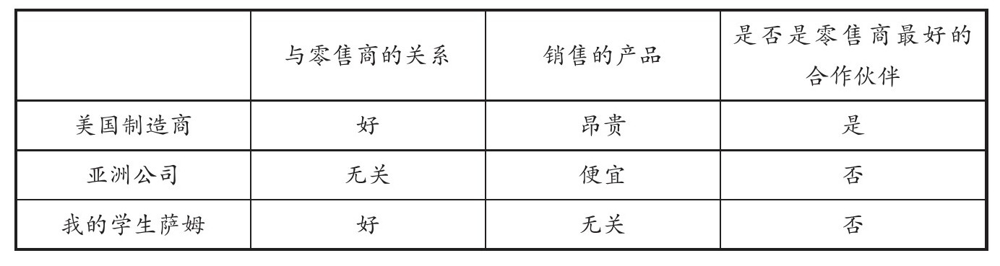
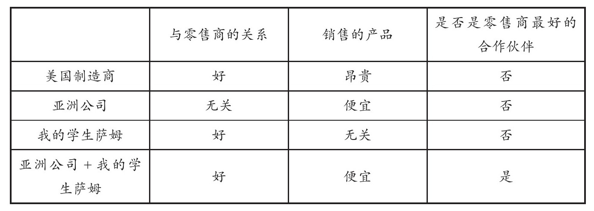
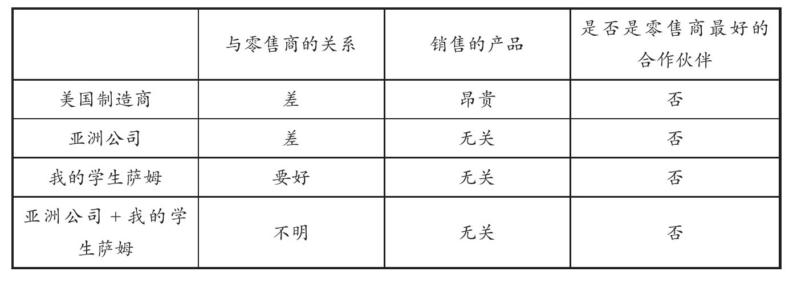

拉赫达尔·卜拉希米（LAKHDAR BRAHIMI）
1962年10月16日，美国U-2侦察机在古巴上方进行侦测时发现不明建筑，随后证实其为古巴在苏联政府的帮助下建造的发射核武器的导弹台。在古巴附近建造这样略显珍贵的导弹台，并不让人意外或疑惑，但是它的存在有两点显著特征，即对美国政府的“特别”关心 72 。首先，这个导弹台有能力对准美国土地发射攻击型导弹，其次，运送核弹头也不成问题。在此之前，苏联政府无论在公众场合或是私下里都曾保证过，不会在古巴部署带有核武器的攻击型导弹。现在看来，这些保证根本就是谎言，其部署导弹的真正目的是拖延时间。这也是后来为人们所熟知的古巴导弹危机 73 。
冲突的不断升级，使人类空前地接近核战争的边缘。10月18号，美国总统约翰·肯尼迪（John F.Kennedy JFK）组织了一小群人作为其智囊团，后来这个群体被熟称为美国安全理事会（ExComm）。他们被秘密召集，为这次突发的冲突事件出谋划策。秘密小组的成员有来自美国参谋长联席会议（Joint Chiefs of Staff）的长官、国务卿、国防部部长、国家安全顾问、中央情报局官员，还有罗伯特·肯尼迪（Robert F.Kennedy），他是约翰·肯尼迪的弟弟，同时也是司法部部长。
早先，安全理事会提出了两个主要应对方案。第一种我们称之为进攻策略，趁导弹发射场未完全成型时立即发动空袭摧毁它，同时从陆地入侵古巴。第二种我们称之为缓攻政策，美国政府需要进行海上封锁以防止更多的军事武器运送进古巴，同时还要通过外交手段，联合南美和联合国以寻求帮助。当然，尽管是温和政策，军事入侵依旧是万不得已时的最终之选。两种方案都有理有据，但风险并存。安全理事会的成员们各执一词，他们甚至在哪种方案能更好地应对美苏冲突升级的问题上，都未达成一致。
安理会刚开始就古巴问题进行商议时，几乎所有人都支持入侵政策。罗伯特·肯尼迪是少数认为入侵政策风险过高的人之一，因为此方案限制了下一步的策略制定。他还认为，像美国这样的超级大国单方面先发制人，去攻击古巴这样一个小国，道德争议那一关就过不去。又过了几日，风向就又变了，安全理事会大多数人赞同缓攻实乃上策。从历史角度出发，几乎所有人一致认为从进攻转为温和是明智之选。理由很简单，1962年时的苏联和古巴教会了我们太多东西，而且新的信息中每一个碎片都拼凑出这样一个事实：进攻策略（无论是空袭还是陆地入侵）所带来的破坏力远比安全理事会设想的要多得多。换言之，相同目的下安理会所做出的预测基本没有正确的：他们低估了军事入侵所带来的巨大风险。比如，安理会估测当时在古巴的苏联士兵大概有10000人，但是实际上超过了40000人。设想一下，如果美国真的杀了这么多苏联士兵，哪怕最终停止进攻，苏联十有八九会以同样的方式回击。同样，安理会认为虽然古巴部署了导弹，但是核弹头却没有传送过去。而事实上，古巴早就储备了核武器，他们的军械库中甚至还有“战术性”核武器，用于毁伤敌方目标。不仅如此，安理会深信没有苏联领导人尼基塔·赫鲁晓夫（Nikita Khrushchev）的明确批准，核武器是不准发射的。然而，古巴地区的苏联指挥官有自由判定发射核武器的权力，古巴领导人菲德尔·卡斯特罗（Fidel Castro）也做出决定，如果受到攻击，自己有权使用核武器回击。美国国防部部长，同时也是安理会成员之一的罗伯特·麦克纳马拉（Robert McNamara）随后解读了这些政策背后隐藏的信息：“没人会相信美国士兵会受到战术核武器的攻击，他们认为美国会克制对核武器的强烈反应。那么这场冲突将何时结束？正是灾难开始之时”。 74
如果一开始采取怀柔政策，这场灾难是可以避免的，但是外交并不是万能神药。因为军事对抗的后果难以承受，所以决定谈判，这并不意味着双方在意见上达成一致——特别是谈判前景黯淡无光，一切未知，互不信任，而且彼此存在根深蒂固的芥蒂与对立。那么如何在双方都不愿意或没能力让步的情况下达成谈判目的？战术的拖延和失误将在何时将你推近核战争的边缘？
◎看似不可能的谈判
除了在军事进攻上先发制人，美国还对古巴采取了一系列封锁措施，但是出于政治和战略原因，这些政策美其名曰“隔离”。美国与许多同盟达成合作，再加上军事冲突威胁的不断升级，他们开始向苏联当局施加压力，并希望通过谈判解除此次危机。苏联拆除导弹并将之从古巴境内移走，这才是美方能够接受的结果。那美国怎么才能说服苏联妥协呢？尤其当下苏联同古巴所持的军事优势，对美国的威胁只增不减，况且美国的态度也很成问题，他们既不想冲突继续加大，也不愿收起些武装力量。
解除这次危机的关键并不是提出一个与原先设想完全不同的方案，而是以一个完全不同的角度去看待这次冲突发生的原因。一切事情能朝着好的方向发展，是因为约翰·肯尼迪愿意站在赫鲁晓夫的角度去思考问题，而且他认真调查了苏联不惜冒着开战的危险，被迫将核武器转移到古巴的原因，找出了原因所在——然后尝试着去理解才是问题的关键。
试着站在苏联的角度思考一下问题。首先，在土耳其和意大利这些靠近苏联的地方，美国早已经部署了能承载核武器的导弹发射场，这种威胁不亚于苏联在古巴建造导弹台。其次，当时美方已有其独特的“导弹地图”，美军的核武器储备量（比如导弹、轰炸机、核弹头的数量等）都遥遥领先于苏联，军械库的技术也先进得多。 75 然而，苏联军械库存在巨大问题。在战事中，能够发射到美方领土的洲际弹道导弹数量明显不足。苏联方面也知道想要克服这个问题还需要时间，而他们也明白，在自身发展期间将导弹部署到古巴来威慑美方的方法实际上意义不大。最后一点，美国中央情报局一直没有停止暗杀菲德尔·卡斯特罗，而且一直尝试推翻其领导的活动，这也让苏联和古巴方面厌烦透顶。
看透这些事情，对解决危机大有帮助，但是前路依旧充满坎坷。接下来几天，随着公共或是私下的外交活动频繁展开，仍面对着许多不安因素，但是各种求和的呼声愈来愈大，重要的决议愈来愈多。有一次，美方在不确定潜艇是否装备核鱼雷的情况下，向苏联潜艇投掷了深水炸弹将其炸出水面，这已经触犯了先前的协议，苏联潜艇可以武装开火。冲突期间，菲德尔·卡斯特罗曾在他最绝望的时候给赫鲁晓夫写了封信，信中建议先对美方发动核武器袭击，但是赫鲁晓夫明智地拒绝了这项提议。
尽管占据重要的（但是有限的）军事优势，甚至导弹发射场已经开始运作，问题最终以谈判并签订协议的方式解决，而不是武装军事反击。协议主要有以下几点：苏联在联合国监督下在未来几月内将导弹撤出古巴境内，作为交换，美方终止对古巴的封锁政策并实现两项承诺。第一，对于古巴，美方做出“不会入侵”承诺。第二，同时也是最重要的一点，拆除部署在土耳其和意大利境内对苏联有威胁性的导弹装置。协议的签订也一波三折。美方认为自己做出最后让步会显得自己太弱，好像害怕一样，所以才要求移走导弹必须秘密进行。赫鲁晓夫曾说，如果公开宣布美方在导弹危机中做出让步，美方很有可能不会按之前说的去做。换句话说，协议明显偏向赫鲁晓夫，然而他却不能宣布其胜利。赫鲁晓夫认为，核武器对抗后两方陷入僵局也存在可能，那样的话局势可就扭转了，将会取代之前达成的一系列解决方案。
美方导弹拆除工作将在未来几年完成，而赫鲁晓夫在古巴导弹危机之后很快就下台了，所以在某种程度上让人觉得是美国“获胜”了。也许数十年之后，美国也会在公开场合像约翰·肯尼迪一样承认是美国做出了让步，以自身移除导弹作为同苏联谈判的交换条件。
◎同理心为你创造更多选择
若不是总统约翰·肯尼迪先生愿意站在赫鲁晓夫的立场上去思考问题，危机可不会如此成功解决。 76 站在美方的角度看，苏联这种做法不讲道义，不负责任，还带有挑衅的意味，为了争取军事优势甚至谎言重重，恶意误导美方。
但是站在谈判角度上更重要的考量是：如何以另一种方式看待其所作所为？事实上，如果约翰·肯尼迪没有站在苏联的角度去思考这样做的原因，那么谁都没有想走谈判路线，或者外交手段的意愿。谈判开始之后，正是因为美方理解了苏联的真正想法和关切点，所以问题才得以解决。这就是同理心之力。
有些人认为，换位思考就是一方想做和事佬，或者是示弱的一种手段，这种理解简直错得离谱。对谈判者来说，了解自己的对手可不是因为想通过某种“和善”“慷慨”或者“开明”的方式同狡猾的敌人斗争。之所以强调换位思考，是因为知己知彼，方能百战百胜。就拿古巴导弹危机来说，若不是肯尼迪总统了解赫鲁晓夫总理的想法与感受，谈判可能就得不出什么结果——或者说，想都别想。肯尼迪总统意识到，因为美国在土耳其和意大利部署导弹的行为，所以苏联理所当然认为这存在威胁，只有移除这些导弹才能打消苏联的担心，解决冲突。否则，任何让步都没有意义。如果其中一方的做法确实带有恶意且不合理，做些让步又如何？
在所有类型的谈判中，你换位思考的能力越强——能够尽自己最大努力去了解各方动机、利益、约束条件——那么你发挥潜能解决冲突、打破僵局的选择也就越多。当你站在对方的角度考虑问题，与其说你在为对方出力，不如说你在为自己谋利。老板回绝了你加薪的请求，你觉得他无情无义；商业伙伴提出了些过分要求，你觉得他贪婪无比；政治上意见与你不同你就将他贴上恶意满满的标签，你这是将自己困在了原地，动弹不得。你的老板或许有苦难言，你的商业伙伴或许认为其要求不算过分，你的政治对手或许深信他的政见对国家有利无害。如果我们只是考虑自己，冲突只会不断升级，找不到同对方共同的利益所在，无法理解对方的想法，甚至异想天开地认为各方的共同利益相距甚远。有一颗同理心并不能保证一定成功，但没有同理心你将注定失败。
◎最需要用同理心之力的人，反倒是不懂同理心之力的人
我们大多数人认为自己相对别人已经很善解人意了，但是我们在同那些做事令我们厌烦或不解的人打交道时，并没有做到善解人意。而当我们处于这种境地时最需要的就是换位思考。你肯定非常了解你的朋友，同理，足够了解你的敌人，才是解决冲突的关键。
切莫将同理心和同情心混为一谈。同理心的目的是理解对方做出这样行为的原因，但并不意味着你要去赞同他们的目标和所作所为，毕竟理解对方的作为和赞同其作为是不同的。如果我们选择与对方礼貌地谈判，而不是在战场上兵戎相向，那么接下来我们就要研究其认为自身行动合理恰当的原因，尽管在我们看来这完全是无厘头之举。当你的谈判陷入困境，双方争吵不断，你并不需要赞同对方的观点，而是要去理解他的想法。
罗伯特·肯尼迪曾发表过一些言论，内容主要是一些后辈能从古巴导弹冲突中学到什么。其中他不仅提到了同理心的重要作用，还提到了换位思考的重要性：
◎留有余地
双方如火如荼的对峙期间，美方的隔离政策很快就落实下来，即苏联的船只只要靠近警戒线就会被拦截。但是约翰·肯尼迪并不支持这项隔离政策，而是同意船只通过。安全理事会的成员认为，在隔离线两端美苏船队沟通的时机尚未成熟，肯尼迪因此采纳了他们的建议。经过深思熟虑，他认为或许应该给对方一些时间思考其行为的后果，这对两方间冲突的解决更为有利。同样，两方冲突期间，一架美国U-2侦察机在古巴上方被苏联击落，安理会认为这类行为可能会让美方立即发动武装回击。美国国防部部长麦克纳马拉表示：“类似于向美方开火的行为无异于说明苏联妄图不断扩大冲突的心理。因为，我们派遣U-2之前曾达成一致，一有异动便立即开火。” 78 然而，侦察机虽然被苏联击落，对于军事首领提出的立即开火回击的建议，肯尼迪总统也没有采纳。肯尼迪总统推测这可能是一个意外：因为赫鲁晓夫不会在局势如此紧张的时候贸然发动攻击。我们最好不要莫名假设说局势会越来越糟。事实证明肯尼迪的想法是正确的，因为击落侦察机的命令并不是赫鲁晓夫下达的。
为减小冲突不断升级的风险，最好的方法就是做一些让步，多一些宽容，以免引发报复行为。当某一刻你觉得别人逼迫你的时候，先别着急攻击回去，首先应当弄清楚这到底算不算是恶意刁难，是否乃故意所为，还要弄清楚这样做的原因是什么。若你的对手咄咄逼人，你很确定他是故意为之，那么理所当然会有一些下意识的反应（但是，你知道，这样的选择并不算好）。一般来说，根据先前情况来制定你下一步的回击方案，但你也可以开拓另一种思维来酌情处理。为了减少误判对方意图而扩大冲突的可能性，约翰·肯尼迪不仅给对方留有情面，同时也明确界定哪些底线是不可触犯的。如果肯尼迪总统仅仅凭借个人感觉坚持报复苏联而发动海上攻击，那么双方之间的冲突将会一触即发。
◎战略灵活性和可信性
做事留有余地并不见得就要付出许多。如果你不回击，而且所用方法也很留情面，说不定别人觉得你实力不强，优柔寡断。假使对方敌意太强，再加上投机取巧，可能变本加厉欺负你。基本来说，你是要在战略灵活性和诚实守信两者间取舍了。因为顾着战术灵活多变不死板，肯尼迪总统每次都冒着失信于民众的风险为苏联留有情面。
可信性指的是——让他人看到自己坚守承诺的程度并帮助自己说服对方做出最恰当的判断。战略弹性指的是一旦发现原先的方法有失妥当就做出改变决定的选择——这有助于我们决策时做出最明智的决定。我相信我们每个人既想守信又可灵活变通。然而，越是变通战略，对方越是认为我们毫无诚信，反之亦然。打个比方，如果你公开承诺某项决定来提升自己的可信度，那么这个决定不可随意变换，因为你选择了可信度，所以无路可退。私下的承诺可以灵活变通，但是很明显你这个诺言的可信度也很低。
◎避免困住自己
有些时候你可能觉得失信一回没什么大不了，因为你发现之前的承诺（一个最后期限或者给自己下的最后通牒）会令你损失惨重。但一般情况下，哪怕代价高昂，你也会坚守承诺。就我的经验来说，完全避免在两者之间取舍的可能性很小，或多或少取决于你认为何种选择是明智之选。如果你能遵守如下规则，可以避免很多冲突发生：不要急着给自己下定论，或者应该避免去给自己定什么最后通牒。因为有时无须定论，反倒能达到目的。换言之，从很大程度上讲，若非必要之时，千万不要下什么定论把自己逼进死胡同。
◎不要强迫对方在识时务和留情面中做选择
同样的问题也会存在于谈判桌上的另一方：开始谈判时，他们想在维持自身可信性和灵活变通策略上收放自如。这也是为什么在肯尼迪眼中，赫鲁晓夫并不算恶意满满，敌意深重。真正令冲突升级的是那些自作聪明的敌人，他们掉进了陷阱之中，认为交战才是唯一选择，不然就是懦弱的表现。结果表明，正是因为肯尼迪没有将赫鲁晓夫置于邪恶的一方，认为自己只有迎战和后退两种选择，才做出了如此明智的决策。罗伯特·肯尼迪在有关危机的记载中说道：
◎小心知识的诅咒
双方对峙期间，如果采用“温和缓攻”的策略，肯尼迪总统必须向国会领导们报告在古巴发现的最新情报，还有美国接下来的打算。但是国会那边情况并不如意。他们指责总统此项政策收效甚微，虚软无力，甚至苏联可能会因此大胆入侵。肯尼迪总统和他的团队对此既表示理解，但也感到烦闷。大多数人觉得国会的想法太过天真，目光短浅而且一点都不人道，其中罗伯特·肯尼迪的感觉尤为强烈。在那时，约翰·肯尼迪曾告诉过他弟弟的一些话，在我看来最能体现总统的人格。罗伯特·肯尼迪回忆道：
约翰·肯尼迪曾说，在危机爆发不久之后的日子里，安理会的成员们关起门来就此事思考后进行讨论，不断更换策略，甚至整夜睡在会议室，为了克服困难，解决不完善方案带来的问题。经过几日不眠不休的讨论，最终得出结论，认为进攻方案愚蠢至极，虽然缓攻方案还不够完美，但是不失是一个好主意。约翰·肯尼迪给罗伯特·肯尼迪出了这样一个棘手的问题：究竟何时国会能通过这项决定？我们花了这么多天能达到一个什么样的程度？尽管约翰·肯尼迪对国会的想法忧心忡忡，但他仍旧提醒自己的弟弟，我们不应该将对国会的要求定得比自己还高。
约翰·肯尼迪原本提出了社会科学家口中“知识的诅咒”之概念。所谓“诅咒”描述了如下这种现象：一旦我们习得了某些知识，就会不理解获得该知识以前的状态。也就是说，一旦我们学到了一些知识或者得出了某种结论，我们就再难理解学习之前的想法，或者不理解还未弄懂该知识的人——但我们忘记了，未学之前我们也无法理解。这种偏差会耽误我们之前向正确方向努力的进程，背离了我们的初衷：父母想方设法激励我们，老师不辞辛苦教书育人，老板不顾身份鼓舞员工，谈判者们千方百计劝服对方。在这些领域中，如果我们不记得本来就很浅显的事情，而且对手也不一定心知肚明的情况，对我们来讲百害而无一利。但你能说对方就是错的吗？
◎不要只准备你的论据，还得有听众才行
所谓的“知识的诅咒”让我们明白，无论是商业谈判还是外交工作，走进谈判场不应只是带着自己准备的谈判材料，并期望今日大获全胜。我们要努力获得更多人的支持，与此同时，在对方能接受自己观点的合理之处之前，我们也要考虑对方的看法、感觉，以及是否有同样的经历、能不能很好地理解。如果没有人愿意倾听、理解、领悟、评估我们所持的观点，无论我们的论点有多充分、建议有多合理、选择有多明智，在谈判上也毫无用处。
哈佛大学的谈判项目组每年会举办一次杰出谈判人才奖的评选活动，竞选范围从外交官，到商业谈判员，甚至包括艺术家在内。评选活动中有一个问答环节，每一位参选者都无可避免要回答这样一个问题：一名优秀的谈判者身上有什么特质？许多盛名在外的参选者所给出的各式答案中（他们曾多次身处不同环境中跨文化谈判），能让我们发现一些端倪。有这样一个特质反复提及：即要有同理心。当你为商业交易、种族冲突、工作竞争、有关婚礼的不同意见或者国际贸易等种种情况谈判时，尝试去理解对方对局面的看法至关重要。
能够站在对方的角度思考问题，既能扩宽解决冲突的方法和思路，也能谈成双方皆能接受的结果。但前路依旧崎岖。有的时候，对方的行为绝对算是不怀好意——而你的处境也愈发危险，每况愈下。该如何利用同理心来帮助自己脱离困境呢？在下一章，我们将遇到这样一种境况，接下来让我们一起看一下如何利用同理心谈判，扭转战局吧。
我曾经帮我的一个客户——它是一家由美国本土技术支撑的企业——同一家中国的公司谈判商业协议（CA）。 81 其实这两家公司之前就有另外一个协议：我加入进来的一年前，他们签署了“共同发展协定”（JDA）。根据共同发展协定的条款规定，中方公司若为了拓宽发展并进行测试工作而使用美方的技术，需要支付费用。与此同时，他们也要为公司产品设计生产设备。作为回报，美方公司将提供中方早期的产品使用权，并派遣工程师进行技术支援，为两方长期合作做准备。虽然两方都没有必须签署商业协议的硬性规定，但双方合作所带来的利益数量可观。
共同发展协定就像一张路线图，上面布满了节点，每一个节点都清晰地描述了自己或双方特定的责任（比如提供数据支撑、共享未来规划、按时支付款项等）。每当一个节点的任务完成之后，双方要在上面标记“完成”，之后才能开始下一个小节。一切都有序进行——但不久，突然发生了变故。问题出在第2.8小节，中方拒绝标记完成。这一环节需要我方写出产品的10次测验结果报告（包括产品效率、耐久性等），之前的9次测试结果非常好，算是“超常发挥”，但是第10次的测验结果远低于我们设置的标准，但也没有对产品造成什么实际的影响，没比之前差到哪里去。双方之前完成标记的节点，每一次的结果都远高于预期，所以这次也标记完成并非难事。当然，建立在双方都想将第10次的测验结果含糊过去的基础之上，他们可以这样选择——而事实上，双方也决定含糊了事。
正常来讲，履行共同发展协定期间稍有延迟或暂时中断并不是什么大事。在这个案例中，我的客户最忧心的是中方现在不愿立即标记这小节。几个月之前，我的委托人同风险投资家（VCs）商议了有关对公司追加额外投资的事情，他也同意了在条款单上（合同之中）增加几条特殊规定。其中一位风投家对我的委托人出的高估价（将近20亿美元）表示质疑，认为他将希望全部寄托在一切不发生意外，产品按时上市上面。但是谁能向风投们保证未来两年之内毫无变数？为了兼顾双方的利益，照顾双方的感觉，我的委托人同风投们达成了如下协议：如果未来几个月不出意外的沿原定轨道有序行进——其实完全取决于中方能不能在9月底之前标记完成第2.8节点——将追加20亿美元的投资；如果不能，投资金额将削减为10亿美元！总而言之，只有第2.8节点标记完成，才能拿到另外10亿美元投资。
现在是8月的第一周，中方还是不愿意在第2.8小节签字。我们催促中方尽快完成标记，他们却回复我们不应困在完成标记共同发展协定的节点之中，而是应该赶紧将商业协定的条款最终确定一下，还说道“毕竟商业条款才是正事”。面对我们的坚持，他们将事态变得更加糟糕，“现在我们先将2.8节点和共同发展协定搁置一旁，开始商量有关商业协定的事情。我们正式签署商业协定的那天，就是我们标记第2.8节点的日子”。
首先我要澄清两点。第一，共同发展协定的节点同商业发展协定毫无关联，之前的讨论也没将两者混为一谈。但是中方为什么突然就提出这样的要求？第二，如果将2.8小节的标记和签订商业协定放在一起实在太过纵容中方，给了他们太多的筹码。如果不是他们用迟迟不标记2.8小节来威胁，我方在商业协定的签署占据非常有利的位置：我们没做出任何有约束力的承诺，也有其他人想要同我方合作。况且，中方在合作关系上投资颇多。当然，我们很乐意同中方签署协定，因为我方在商业协定中有很多筹码来维护我们的经济利益和战略目标，前提是没有第2.8小节的事情。现在对方手中握有王牌：推迟标记2.8小节，最后拖到我们不得不答应他们的要求，但是我方所做出的退让，基本跟高额的10亿美元估价持平。
他们现在握着筹码，我想他们也知道，而且正打算以此出手。但是站在我方角度看，他们根本没机会能悉知我方同风投商签订的条款，而且从理论上讲，谁会相信风投商和对方互相通气呢？有没有可能是前几周同中方负责此事的人员讨论时，我方有人告知了标记2.8节点对我方的重要性，或者说我们表现得太过急切了呢？也不是不可能。关键是我们现在身处险境，该如何是好？
◎不伤财，不劳神
现在这种状况引发了我方极大的不安，同时也很愤怒。我们共事一年之久，都遵守承诺，而现在中方拿捏住我公司估价投资之事妄图让我们在商业协定上做出让步。我们没有太多的选择权，而且每一个方案都不理想：
前三个方案的风险太大，只有方案四我们认为还算可行，可是结果我们也不太满意。风投商对我们的困境表示理解，但并不会改变削减投资的条款。我们将希望寄托在风投商身上，不断同他商议，并期望在9月底约定的期限步步逼近时，他能够变通一下。我们团队中大部分人都坚持采用第一个方案，同中方在期限内达成商业协议，并且得到双方都满意的结果。虽然我们已经在我们“搭档”那里连续受挫，可是协议依旧谈不拢。
但是说不定还有别的路可以走出困境呢。
在我看来，所谓困境的关键是我们不知道自己究竟想解决什么问题。换言之，现在我们还是不知道中方为何拒绝标记2.8小节。当然，我们做出了两种假设：（a）他们确实不怀好意，想以此作为筹码；（b）他们确实不太在意共同发展协定，而且认为将目标转向谈判商业协定，现在是最好的时机。还有别的可能吗？我们不止一次问过中方不愿意这样简单标记一下的原因，他们的回答多少有些模糊不清，而且也不是特别指向第10次的测验结果。所以我们尝试从别处寻找答案。我们将本公司曾同中方接触过的一些人召集起来，集思广益，找出原因。究竟有多少种可能的原因使中方不愿标记？在我们列出的详尽的可能性中，有额外两种动因我们未注意到：
我们不知道应该解决哪一个问题——而且对方也不承认是出于这些考量才迟迟不在第2.8小节上标记——基于此，我们决定两个问题一起解决。但是仅解决他们的这些问题是不够的。作为回报，我们必须确保他们尽快标记第2.8小节。我们呈给了他们一个三步走的提议：（a）我们将同中方一起将支付条款和12个月的时间表修改润色，用来弥补我方没有通过第10次测验的过失，做出一些退让；（b）作为回报，对方应该同意搁置商业协议的谈判直到他们标记第2.8小节为止；（c）如果9月15号我们还是没有收到对方标记完成的消息，那么在第2.8小节标记完成之前，我公司将中止与对方的合作。总而言之，我们其实为对方提供了很大的灵活空间，尽最大可能完成对方的要求，作为交换，在节点标记之前先不提商业协议的事情。我们走了一步险棋，好在对方还是同意了。在接下来的几周，我们达成了分期付款的协议，同他们的总工程师修订了时间表，而且我方还提供了工程技术支援，来帮助对方按照原定一年规定的交货日期生产出设备。同投资价格的削减和谈判商业协议相比，我们做的让步根本不算什么。
短短数周，两方似乎达成了共识，关系更进一步，每一方的需求都得到了对方的重视，也没有再纠结于第10次的测验。但是最后的大危机正在逼近。之前同中方说定的这些议程最迟9月27号能完成，但那时还未到标记2.8节点的日期。看起来标记似乎一定会延迟了：因为他们的人员签字的准备工作未完成，文书工作也未完成，所以还不能签字标记完成。他们说会在两周之内整理好文件回复我们，可我们现在怎么办？
经过一晚上的商议，我们决定使出最后一招：告诉他们实情。我们告诉中方总裁，眼下如果他不立即签字，我们就拿不到200亿的完整资金，而且深陷泥沼。为什么我们这样做？我们做好告诉他之后所承受一切风险的准备了吗？其实这种唐突的做法是有原因的——并不是深陷绝望，而是绝处逢生。我们告诉中方总裁，虽然我方可以走常规手续等待文书过后到达，但是明天我公司就要向风投商出示邮件来证明我们两方就2.8节点问题已经明确达成共识。如果你同意的话，我们甚至可以将邮件的内容编辑好传过去；而他需要做的就是复制粘贴就可以了。隔天他就回复了邮件，我们保住了那额外10亿美元的投资。
◎发掘对方行为的潜在原因
当对方特别强势而且做出一些肆无忌惮的行为的时候，你的选择似乎不会太多。我们觉得困在了某处无法动弹，这样想可就错了。我们错误地判断一些潜在的问题，其实有许多可用之法不会立刻显现出来。之所以事情出现了转机，是因为我们摒弃了之前认为对方怀有敌意而且要对我方不利的假设。同时，将我们板子上的痕迹抹去（从文学角度讲——我们只有空出来某一白板上的空间，才能更好地拓宽思维，来一场头脑风暴）然后提出这个问题：有多少潜在的可能性能来解释对方的行为？
对谈判者来说有一点很重要，就是研究除了因自身能力不足或者对方带有邪恶意图之外，还有什么原因能促使另一方做出一些带有侵略性、不正义、不道德而且看似毫无理由的行为。当然，你可以在进行详尽的查问之后推测出他方确实有所企图，可是一开始最好先别这么想。从这么多案例上看来，基本都是有其他缘由的。比如在这件事上，中方抓住2.8节点不放确实不算光明磊落。但是我们团队当中也有人认为他们延迟了额外200万美金的付款倒也是可以理解的，因为他们为合作也投资颇多，却没从我们这得到什么益处。同样地，我方也有一些人表示可以理解中方工程师，因为对他来说，那张时间表设计之初就有些不切实际。如果他完不成进度，一定会认为他不守信用，说不准一年之后就该让他回家休息去了。他运用一些专业技术，设法利用我们第10次的测检结果为自己争取一些时间，这倒也无可厚非。然而，无论种种意图在我们看来有多么合理，重要的还是他们的想法。如果我们能够收起武器，集中精力研究对方的其他动机，而不是判定他们太过贪婪，我们就有更多的机会解决冲突问题。
◎明确心理障碍、结构障碍、战术障碍
不是每场谈判最后都能有一个结果。如果你提供给对方最佳待遇而他们却做出了稍差的选择，谈不成协议说不定更好。没有达成共识只有在以下这种情况才算是悲剧：对各方来说你是很好的合作伙伴，能为每一个人都创造价值，但是前进的路上也有一些障碍。就像谈判之前要尽可能罗列出对方的行为动机一样，在一些重要的谈判场合，尽量去预测能够破坏谈判的各种因素同样重要。究竟克服哪些障碍才能成功谈判、达成共识呢？
总的来说，遇到以下三种类型的障碍，谈判者应该小心为上：
无论是身处复杂的谈判场，还是遇到难以解决的冲突，你肯定不希望碰到这些障碍，如果碰见也不见得愿意去克服它。但是你若为此而努力，实际上会提高你成功的概率。有一件事你应该明白，无论是否需要找到解决双方互不信任的办法，都应该汇集广泛的信息，并将另一方带到谈判桌上关起门来讨论问题；或是抢先使用进攻之策，之后却因盲目信任而持续向前。遇到这些障碍，都要尽快克服，才能想出对各方皆有益处的解决方案。你越是小心评测你所遇到的各种挑战，越是能全面考虑自己部署下来解决问题的各种手段和方案，你为之所做的努力才越是有回报，成功的概率才会越大。
◎全身投入其中
想象一下你走在街上突然冒出个人袭击你，在你察觉之后，一定会为了自卫有所回击，依靠本能出拳打在他的头上。在这紧要关头，你可能会一次又一次出拳。但这并不是最有效的方法，尤其面对着一个身手不赖的袭击者。这时，你应该使出“全身之力”。不要将目光集中在一个目标上，或者只用一种办法回击。如果是一个经验丰富的战士会调动各种可用的工具回击（比如双手、双脚、膝盖、手肘及周围一切可以用来自卫的物品等），同时判断可作为目标攻击的潜在区域。
在谈判场和外交工作中也是一个道理。经验丰富的谈判者会使出浑身解数来判断自己需要克服的所有障碍，然后找出所有可用的方法和手段来达到目标。在这次谈判中，我们几乎想到了所有潜在阻碍标记的可能性，比如：给工程师的时间期限是不是太短，中方总裁会不会有不签署商业协定就没法获利更多的想法，还有我方签订的投资贬值规定之条款对其有没有影响。我们也认真罗列出能够克服这些障碍的可用手段。比如：同投资商谈判，从我公司调动一切力量找出对方行为的动因，重新规定支付条款，借用我方技术资源帮助对方解决工程问题，同时也稍显我方实力，如果对方不尽快标记完成，我方将以中止合作作为威慑。如果我们只采用“硬性战术”（威胁中断合作）或者“温和方案”（满足对方调整支付条款和时间表需求）的话，我们不会成功解决危机。各种战术齐头并进才是行之有效的策略。
◎对最后通牒视而不见
能够冷静判断对方侵略行为的多种可能性，同时静下心来全身心投入判断之中并不简单。尤其对方做出略带侵犯的行为和要求，甚至散发出威胁和不容置喙的意味时，更是难上加难。
我们在各种大小的谈判场上经常能够听到太过绝对的话语：比如，“我们永远不会……”“不会出现这样一种情况……”“你必须……”，再有就是“这不可能”。当听到这种类似于最后通牒的表达时，大多数情况下我都不太在意。不管是何种类型的谈判，或者谁把话说死了，我通常视而不见。我不会要求对方说清楚他是什么意思，或者让他重复刚才说的那些话，对于这类最后通牒的话语，我不会有太大的反应。相反，我就当他从来没说过。原因如下：一天之后，一周之后，也可能是几个月或者几年之后，他们就会意识到，他们曾经说永远不会做的事情到头来一定会做，他们嘴上说自己可能不会去做的事情，往往正是其利益所在。如果真有这么一天，但愿他们还记得信誓旦旦地保证过不会这样做——也许他们也正担心我会不会记得他们曾经做过的承诺！如果我本身不太重视那些话，他们就可以轻易地改变自己的策略，不再坚持之前的定论。我并不想将对方推入艰难抉择的境地，即强迫对方选择固守最后通牒还是去做对他或对我最有益的事。
当然，盖棺论定不是没有正确的时候。如果这样，贸然忽视岂不是很危险？当然不。事实上，如果对方给出的承诺一定能做到的话，他会一次又一次在各种地方用各种形式不断强调。有的时候，我会根据对人员和情况的判断来决定要不要认真看待这种太过绝对的承诺，如果接受的话对对方就是一股强大的约束力。也有这种情况，比如谈判中定好了许多绝对条件，但绝对不算是“红色警戒”或者是不能通融的事情。比如人们觉得有些愤怒和心烦的时候，确实会说出一些不必要的冒犯之语。有时候另一方会觉得自己被摆布了太长时间，所以只是想要回一些主动权。尤其是在跨文化谈判的时候，也会出现妄下定论的情况，也许仅仅因为翻译在关键之处犯了个错误，或者是因为独断之人沟通方式的不同。有时候他们只是为了强调这个问题对他们来说很重要，并试图让你做一些让步。以上种种情况，忽视那些太过绝对的话语能避免出现双方因言语冲突不欢而散的情况。
◎对最后通牒重新措辞
“忽视最后通牒”的策略不适用于所有情况，有时也要做出改变。当我认为某些话可以不用重视之前，我会先将其视为普通要求加以重述。比如，我听到某个人说“某事我们办不到”，之后我会将这句话重述为如下之意：“今天所谈之事，让你去完成着实有点强人所难……”这样一来，对方生硬的言语在我这里变得更加生动。如果他们最终意识到完成这件事是明智的选择，那么至少有两种方法能帮他们将之前说过无法完成的话语圆回来。他们必须承认，是受到“今日处境下无法完成这项任务”这一观点的约束（但是这种约束力不是长久的），而且在这种处境下“很难”向前移动（当然这也非绝对）。待我们的思维一开拓，处境也便没有之前那么糟糕，未来的日子里一定就可以做到。
◎今天谈不成之事，或许明天会有转机
境况会随时改变，新的机遇也会涌现。今天看起来完不成的事或许以后就能做到——但你一开始就要有所准备。回想一下，有时候我们能够非常设身处地地考虑对方的想法，但是我们的问题却完全没有解决：直到最后期限前几天，我们才告诉中方总裁为什么我们如此急需标记完成第2.8节点。为什么我们这样做？是因为我们深陷绝望，无路可选吗？并不是。事实上，尽管只有三天期限，我们也没有感到绝望，因为我们有足够的信心，能够确保中方总裁不会抓住我们对第2.8小节标记完成的需求不放，进而要求进行商业协议的谈判。这也是我们一开始就制定好的战略中的一部分：因为我们预想到总有一天会将我们所处的困境悉数相告的可能性，所以才会有第2.8节点标记完成之后，才能开始商业协议的谈判的要求。因为要想在商业协议谈判中取得一点成就至少都要一个月，要想双方达成共识，谈判出一个结果，则需要更多的时间。虽然现在距离我方最后期限只有三天，但中方总裁若想借题发挥，在商业协议上获得更多利益根本连门都没有。他迟迟不肯在第2.8小节上签字纯粹是想给我们点厉害瞧瞧，没有什么物质上的利益，无非就是让他未来的合作伙伴吃点苦头。
我们也有能力，在保证安全的情况下使用余下的那一个方案——对中方毫无保留地将实情全盘托出——因为我们已经谨慎地考虑了使用这个方案最终会带来什么结果。无论是8月初我们制定的第一个策略，还是在整个谈判过程中，我们从未被现实蒙蔽了双眼，中方对我们借题发挥的原因，从来都不是因为我们需要他们在第2.8节点签字。他们之所以牵制着我们，是因为我们需要尽快完成签字这件事，就是这件事给了他们能力，借此机会想要在商业合同谈判中压榨我们。我们通过延迟商业协议的谈判拿走了他们的筹码，所以即便是快到最后期限，他们也没有办法用第2.8节点作为筹码与我们谈判。
在所有类型的谈判当中，有一点至关重要，就是要注意战略环境随时间发展的动向——还有你如何控制其发展。一定要记住：你认为今天谈不成的事情也许明天就能成功。有的策略也许在谈判早期显现不出其作用，但是以后说不定是最安全的，同时也是能带来最大利润的方案。你的分析和方案也许第一天可行，但第二天就发现不适用了。一周之前对方不同意的事情说不定现在就能接受了。每一天看待世界的眼光都是不同的。
另一方对于谈判的看法不会在几周、几月，或者几年之内就改变；当然，会不会改变也完全取决于你的做法。在之前古巴导弹危机的案例当中，我们也提出过相似的观点。约翰·肯尼迪总统曾告诉过罗伯特·肯尼迪，虽然无法让国会认同我们现在的做法，但是他们的观点可能会在几天或几周之后改变。同样，在这次与中国公司的谈判中，虽然我们也认为有一天将自己的状况和盘托出风险太大，但是一个月之后我们做出了这样的决定，这是因为我们不再处于不断让步的境况之下。1992年的美国全国曲棍球联盟劳资协定谈判案中也出现了同样的情况。球员们的胜利建立在破坏双方未来的关系之上，却强调了在谈判中时间的重要性。球员们明白，谈判的时间与谈判的方式同样重要：除了一开始在赛季之前全体罢工之外，他们一直在等待，直到对方束手无策之时，才正式出招。
谈判伊始就能理解对方的想法，站在他们的角度考虑问题，还是远远不够的；我们还要持续观察，看他们是否会改变策略，怎么改变，还有随着时间的推移对他们有什么影响。
当然，有时候你站在对方的位置上思考只是更加确信他们会一直坚持自己的观点。有些时候，他们会固执己见，不愿改变，甚至什么都左右不了他们的想法。下一章，我们就会遇到这种情况，让我们来看看有什么办法能打破僵局吧。
1965年，沙特阿拉伯的国王费萨尔（Faisal）遇到了一个问题。他刚刚上位不久，就开始大刀阔斧地推行国家急需的经济和社会改革。这些改革都出于同一种原因，要将“为所有公民重建光明”的想法变为可能。费萨尔把电视机全国普及计划提上了日程，但是他现在遇到一个问题：不是所有人都相信电视机是没有副作用的科技产品。许多宗教保守派认为电视机出自恶灵之手，有一些极端分子进行商讨之后，将电视机比作头戴恶魔之角，手持恶灵铁叉之形象，犹如美国星条旗一样。很多情况下，可以预料到一些宗教人士对高科技产品的引进会持反对意见。怎么样才能劝服人们不再视电视机为恶魔活动的一种媒介？费萨尔很幸运，因为他不是第一个面对这样棘手问题的沙特国王——他的父亲也遇到了同样的问题。
1925年，沙特阿拉伯还处在伊本·沙特（Ibn Saud）的统治下。他是一位非常厉害的统治者，在位期间巩固了国家统治，也鼓励宗教的发展。他也遇到过棘手的问题。他想要在国家推广现代科技——比如电视机和电话。想必你也猜得到他遇到了什么困难，是的，在很多有一定影响力的宗教人士眼中，这样的电磁通信工具，唯一合理的解释就是恶魔制造。这种言论之中，究竟有多少是因为真的担心，而又有多少是想借此阻碍沙特的现代化进程？无论是何种情况，国王都心知肚明，如果不打消宗教人士的疑虑，就不可能在推行科技发展中取得进步，不管这些宗教人士究竟是真的固执地认为科技是恶魔制造，还是仅仅为了消费大众心理。
◎不伤财，不劳神
伊本·沙特意识到，想要彻底扭转宗教人士对此的异议态度，只有从宗教本身出发，而不是在周围一直打转。因此，他邀请了一部分宗教领导者到王宫去，让其中一人拿着麦克风，其他的人都站到通信设备的末端。之后，他让对着麦克风的人背诵穆斯林圣书《古兰经》（Quran）某页。声音通过诵读者传到另一端，伊本·沙特的观点最终在争议里获胜：如果这些高科技设备出自恶魔之手，怎么可能传递得了《古兰经》的文字？ 82
伊本·沙特用这种方式克服了这个阻碍，激动不已。25年之后，也就是1949年，他用同样的方式将电台推广到沙特阿拉伯。为了平息电台被恶魔操纵的谣言，第一条广播信息的内容就是朗诵《古兰经》。也许是巧合——或者也可能是为了进一步吸纳更多宗教人士的支持——电台首次开播的典礼就选在了麦加朝圣（Haj，即穆斯林教徒朝圣）的时候进行。
费萨尔之前做了许多无用功，后来他借鉴了父亲的方法。1965年，在一片关心与争议的声音之中，沙特阿拉伯第一个广播电视台揭开帷幕，而播放的第一个节目就是朗读《古兰经》 83 。这是继他父亲之后同一家族中又一个受到感召，用《古兰经》将恶魔赶出高科技之外的人，这也创下了世界纪录。 84
◎以退为进
我非常赞成大家在谈判早期就积极去构建整个流程的框架。当你别无选择的时候，我建议尽快重新审视这次谈判。但有时尽管这样做也没有成效。有些时候，主要框架已经构建完成，并以一个良好的视角记录了一方或多方如何看待自己的处境。有时候谈判和冲突迟迟没有结果，是因为每方都各执己见，不愿退让。这种情况会发生在家族企业谈判、种族冲突问题，甚至是同供应商、消费者、商业伙伴还处于健康且长期的良性的谈判环境中。有时候主要框架并非建立在各方相互影响的特定环境之下，而是反映出文化和环境因素对双方的影响。
大多情况下，让另一方改变或放弃他们的想法既困难又费时，而且重新构建谈判流程也意义不大。沙特国王向民众推广电视机、电台、电话的例子证明，当所有方法都毫无用处的时候，你可以先克服自己观点里阻碍你发展的因素，以退为进——也就是说，弄明白对方的想法，让其为你服务。如果这样，就无法用有效或者无效来评判科技，而是看其代表善还是恶，沙特国王不再一直坚持自己的想法，反而去接受对方的想法，重新审视之后拿来为自己服务。这就能确保他如此解决问题的方式，也能够同人们普遍判别是否属于善良的范畴相联系起来，打消他们的疑虑。以退为进是武术界经常提及的一种方法：如果你重新找到一个突破口，而不是一直坚持用自己的力量迎上对方的攻击，那你前进的力量将潜力无穷。同样，在谈判之中，以退为进强调的是“进攻”，而不是“让步”。能将这种方法做到行之有效，必须非常了解对方关于时局的看法，正确判断他们接下来会使用什么样的策略。
◎宽容地看待不同的观点
有时候谈判场上并没有一个主导的中心思想，而是双方各执己见，势均力敌。双方都坚持认为自己的想法才能解决问题，而且解决问题的想法也互相矛盾。遇到这种情况最行之有效的办法就是互相宽容：在一方不失去自己优势的情况下也尝试着去接受另一方的想法，或者是两方共同构建一个互利共赢的新框架。
就在不久前，我同一位私立学校的校长谈过几次，他正在为了教师薪水的问题发愁。教师的薪水评定主要是依靠他的资历——你工作的时间越长，工资就越高。而现在，学校的捐赠商要求改变教师薪水的评定方法。他们希望以业绩为主要评定方式，而不是以资历为主。他们是这样想的，老师薪水的评定标准，既要看学生的测验成绩，也要看校领导听课后的反映情况。学校的老师都不喜欢这种方法，他们认为按资历评定有理有据，因为教学时间越长的老师，教学经验就越丰富。而那些捐赠商，仍然坚持按“业绩”支付的想法。校长能理解两方的想法和考量，但是与两方谈话之后，还是在选择“资历评定”或“业绩评定”上没有任何的进展。谁也没有对自己的想法做出实质性的规划来。那还有什么办法？
我建议按照前一种业绩评定方式来决定老师的薪水。事实上，两方存在争议的并不是谁的方法更合适，随着期末考的临近，很明显所有老师都认同按绩效算薪水是个好方法。存在争议的是怎么样去计算业绩最好。事实上，老师们不断强调说谁为学生创造更大的价值，就应该得到更多的薪水——这似乎就是按绩效评定薪水的提议——他们之所以认为按教书的年限来评定比较好，是因为可以避免因校方领导的主观印象决定薪水。捐赠商认同说资历是最好计算的一种方式，有时候经验确实能帮助老师很多，但是他们并不认为资历和业绩可以直接挂钩。如果校长能够让两方都认同“按绩效评定”，且将其视为唯一的评定方法（也不用这么绝对），那么双方就能打破僵局，有些实质性的进展。但是，我们应该用什么样的标准去衡量业绩，在给出不同的方法中间选择且这种方法又能被大众所接受呢？ 85 有没有可能将两方的观点合二为一？毫无疑问，双方要想在不同的标准上面达成共识，还需要克服重重阻力，如果能够承认这一点，就说明他们在看待问题上视角已经变得一致，这将有助于他们在思想上受到启发，各迈一步，在制定标准上面稍做妥协。
◎让步他方观点，增加我方筹码
有些时候，如果你想劝服对方接受你的观点，最好是用他们的话语去和他们沟通。虽然不一定是最有效的，但是这会让你的言论听起来更有说服力。有些时候你方观点强劲有力，有能力向另一方证明“即使接受你方解决问题的方法”，也不会让人觉得这个要求太无理。的确，费萨尔的言论就很铿锵有力，掷地有声。哪怕一开始他就寻找将冲突从“科技”领域转到“宗教”范畴的方法。同样，如果教师们想让捐赠商和学校股东重视他们的观点，就要坚定地表达自己的立场，依据捐赠者的需求，找出合适的业绩评定标准措施来取代资历评判标准，毕竟按资历评判实在有点偏向个人，而且还带有某些意识形态的姿态。
◎给予对方控制权——但要视情况而定
有时候为对方选择让步也存在着风险，因为控制整个谈判框架的权力确实很重要，不可忽视，甚至是战略需要。一年前，我们同一家享誉全球，且资产高达数百亿美金的公司开启了艰难的谈判之旅。我的委托方是刚成立没多久的公司，但是其发展速度也不可小觑。另一方明确表示，他们最关键的要求之一是要我方做到如下一则通知条款：我方要提供未来几年接到的收购产品的单据，而且还要赋予另一方还价的时间。他们的要求让人无法理解：他们曾是我方公司保持良好关系的商业伙伴，但是他们不想继续合作下去，而且还出钱买走我公司全部产权，到现在既不愿清醒地看待这件事，也不愿意承认。
没错，这种状态给我方在未来以最好的价格出售公司强加了太多约束条件。如果对方想买下我方公司——或者说他们买下的可能性很大——他们应该知道，其实还有许多收购方看中我们的公司，甚至也在不断抬高价格。一旦签订这项条款，也就是阻止了其他有意愿的收购方在第一时间报价。对方驳回了我方对提议的修改，说是我方修改太多，有的言语含糊不清，原因不明。基于此，我方决定换一种办法，我们没有再提出什么方案，只是告诉另一方，我们同意对方为了保护投资而制定一些他们所需要的任何条款，但是要遵守如下两条规定：第一，也要保留我方寻找给出更高价位的收购方之权利；第二，我方也有自由选取价格更高收购案的权利。如果对方同意以上条件，无论又给我们什么条款，只要合理，我方都接受。如果对方不答应以上两个条件，那我们也拒绝对方的任何提议。
现在，命运的天平明显偏向他们那边，而且我们的要求也清晰明了，所以对方的语气没有之前强硬，方案也有所转变。因为提议来自对方，所以他们不再摆出自我防御的姿态。最终，他们给出了双方都能接受的条款，谈判也有了新的进展。我所用的基本策略是，在谈判双方都分别提出自认为合理的要求，导致谈判迟迟没有进展的时候，阐明你的观点，把决定权交给对方。这个看起来简单的策略有如下几个玄机：
在大多数谈判场合之中，我们都很能意识到站在对方角度思考问题的重要性。但是你想实现自己的目标，同不同的谈判方、谈判场合是息息相关的。打个比方，在和中国公司的那次谈判中，我们也要考虑风投商的想法；在古巴导弹危机的谈判中，安全理事会不仅要站在苏联的立场上看问题，也没有忽视古巴；詹姆斯·麦迪逊构建了一个谈判框架，以退为进，不仅解决了费城的问题，也压下了随之而来的大多数州的争议。在下一章，我们将一起看一下，站在各方立场上思考问题的重要性，真正的谈判者要在谈判中扮演各种角色。
史上名称最长的条约是什么？这件事鲜为人知。其实它是《法兰西共和国与西班牙天主教国王陛下之间关于强化意大利帕尔马婴儿公爵地位和交还路易斯安那州的初步和秘密条约》（the Preliminary and Secret Treaty between the French Republic and His Catholic Majesty the King of Spain, Concerning the Aggrandizement of His Royal Highness the Infant Duke of Parma in Italy and the Retrocession of Louisiana 86 ）。它是由法国和西班牙在1800年签订的，同时也在历史上扮演着重要的角色。根据条约规定，西班牙要将位于北美的大部分路易斯安那领土还给法国，在那之前的1763年，由于法国在法印战争中败局已定，所以将路易斯安那割让给西班牙。
西班牙和法国谈判期间，据称拿破仑的使臣曾“信誓旦旦地保证”说，法国不会出售或割让路易斯安那给任何人。如果法国不想再占着这块土地，大可还给西班牙。但拿破仑转变主意决定将路易斯安那卖给美国，这个消息不仅震惊了西班牙人和美国人，而且使法国境内也一片哗然。1803年，美国只用了大约每英亩四美分的价格就从法国手中买下了路易斯安那。正是这次购地案，美国的国土扩大了两倍，收购来的土地组成了现在的15个州，或者是其中的一部分。
西班牙非常愤怒，他们声称，“法国人将路易斯安那卖给美国，违背了自己的诺言，也根本没有半点尊重的意思”。西班牙为此还要求美国“暂停交易行动，因为建立在这样基础上的条约根本算不得数” 87 。对此，美方解释说，这算不上理由，并且加快了购地的进程，在事情还未完全解决好之前就立刻交易。美国负责法国相关事务的大臣罗伯特·利文斯顿（Robert Livingston）在给詹姆斯·麦迪逊书写的报告中称：“我之前就曾告诉过您，我方有充足的理由认为，西班牙割让土地的协议中并不包括同其他力量分割路易斯安那。我想我可以借此找到一条路，既不影响我们的权益，也可加速实施你在条约中提出的对我方有利的措施。” 88
法国是否有权出售路易斯安那，史学家们争论不一，各执一词。但是麦迪逊却找到西班牙所持主张中的漏洞：“法国使臣承诺说不会转让土地，但是条约中可没有将土地交还给法国这一项。如果有的话，美国购买土地的事情也不会成型，同时也会信守承诺，不告知西班牙美国的立场。” 89 更重要的是，美方深信西班牙不会动用武力来阻止交易。现在美方所面临的最大问题是，法国作为卖方有后悔的可能性，而且法国现在的种种活动迹象表明，它很有可能在最后一刻还会增加条件，让交易更加复杂化，甚至也可能拖延或取消这次土地交易 90 。不可否认，拿破仑一直想扩大法国的疆土，他曾说：“我认为自己已经表现出对这块土地的重视，自我上次同西班牙采用外交手段割让土地之后，就一直有收复路易斯安那的打算。放弃路易斯安那是我人生中最为遗憾的事，但是固执地将路易斯安那攥在手里可不是上策。” 91 究竟是什么原因，使拿破仑决心分割路易斯安那疆域？
◎不伤财，不劳神
法国将土地卖给美国，但为什么是西班牙来发表声明？简单来说，是因为英国的缘故。当时英法正在交战，如果一切按计划进行，法国不仅能同英国和平解决冲突，还能拥有路易斯安那。但计划没有变化快，现今的海地（Haiti）地区和多米尼加共和国（Dominican Republic）爆发了反抗法国的奴隶叛乱——天气情况也很糟糕，导致法国的船只沉没在欧洲的寒冷海域——而且法国还消耗了大量用来抵抗英国威胁的战略物资。然而，现实对于法国更加残酷。如果法国紧紧攥着路易斯安那不放，那么美国将会与英国联盟，共同抵制法国。美国之所以想要购地，是因为路易斯安那地区囊括了新奥尔良（New Orleans），那是美国重要的战略要地。拿破仑掌握着这块土地会令美国惶恐不安。托马斯·杰弗逊（Thomas Jefferson）总统曾经给罗伯特·利文斯顿写了一封信，信中是这样说的：
美方代表开始与法方谈判，但是让他们惊讶的是，拿破仑竟然想要卖掉路易斯安那的全部领土。这个消息背后所代表的含义，是法方不想美方和英国结盟的诉求，因为只要简单地放弃新奥尔良这块土地，就可以轻松解决这个棘手的问题。拿破仑做出这个决定，很大程度上是因为：如果法国在英法战争中失利，那么整个路易斯安那地区就会被英国据为己有。拿破仑认为——相比之下，将路易斯安那地区给美国可比给英国好多了——这样美国的力量就会变强，吸引住英国的注意力，未来说不定还会发生冲突，若是这样，则再好不过了。拿破仑曾经对他的大臣解释说，“我可不会把这样一个定时炸弹握在手里，路易斯安那地区有可能是与美国发生冲突的源头，或者使两方的关系从此变得僵硬。相反，我可以利用这块土地来争取到美国的好感，这样就能打破英美联盟，我也有时间组建自己的军队，以防哪一天有别人报复我们。我的想法终究是为法国好的，所以我才将路易斯安那卖给美国。” 93
很快，美国在超出其太多预期和准备的情况下开始与法国谈判。因为谈判来得突然，所以整个过程都靠临场反应，全程也没体现出宪法权威。最终，双方达成协议。詹姆斯·门罗（James Monroe）是这样告诉詹姆斯·麦迪逊的：
这就是历史上赫赫有名的土地交易案，然而谁也不知道买卖双方的交易到底算不算合法。
◎三边思考
谈判之所以能达成共识，归功于你能认真思考各方在谈判中所扮演的角色，带来了什么影响。人们在谈判中，普遍会犯的错就是只考虑双方的关系——也就是说，只在乎自己和谈判桌对面另一方的关系。就比如在路易斯安那购地谈判中，美方只考虑美法的关系会出现什么变化。如果按照这个思路的话，美国早就能想到法国不会割让土地，稍微好一点的情况，也可能只割让新奥尔良给美国。美方能够肯定，如果收购新奥尔良成功的话，那肯定代价不小，因为拿破仑可把这地方看得很值钱。
正如我们看到的那样，当任意一方采用三边思考的策略时，谈判方案可就变了：也就是不光要考虑自己和别人的关系，还要考虑另一方同别人的关系。当我们细想美国和法国的关系时，就不会为法国的行为而感到震惊。如果我们能更深层次地考虑美国和英国、美国和法国、英国和法国的关系时，就更知其所以然了。
当然我们还可以进一步地讨论“四边关系”和“五边关系”的价值，但是他们的基本原理是一样的：在谈判桌上，如果你只考虑与你发生直接关系的另一方——只注意这一段关系所带来的可能性——是最愚蠢的做法。如果一位谈判者，不仅能想到第三方是什么角色，还能评估他们对谈判桌上的各方所带来的影响，那么他就能更好地预测对方的行为，制定更有效的策略。
◎勾画谈判空间
有的时候，我会帮忙为谈判或者冲突出谋划策，那么在制定战术策略之前，我首先要让我的委托方勾画出谈判空间。谈判空间包含了所有与谈判有关的谈判方。我认为“有关”这个词包含了两种解释：（a）会影响谈判结果的任何一方，（b）任何受谈判结果影响的一方。如果有谈判方会影响到谈判结果的话，那么我就会考虑这一方究竟有没有能力，在什么时候，又以什么样的方式去影响我们。如果我方，或者别的谈判方将他们纳入到谈判过程之中的话，我们会从中获益什么（如果将他们摒弃在外，我们又会失去什么）。如果有谈判方会受到我们谈判结果影响的话，我也会时刻关注他们，因为他们的某种动机可能影响着谈判的进程，也影响到我们的策略和谈判的结果。
就拿路易斯安那购地案来说，谈判空间里不仅有美国、英国、法国、西班牙，也囊括了那些在谈判当中做决定的谈判者。公司和国家不会做任何决议，是人们在做决定。拿破仑和“法国”可是两个概念。谈判空间里也有一些美国的立法者，他们要么促进，要么阻碍谈判的进程，当然，海地的奴隶叛乱和压制者也要放到谈判空间去看，因为判断结果的改变，影响着法国会不会一直要担心在法英战争中失利的问题。如果在漫无边际的空间内能够将谈判范围缩得越小，你就越能精确地理解对方可能出现的行为，不管在谈判空间之中出现了什么与谈判相关的事情，你都能更智慧地完善自己的策略。如果你错误地勾画和分析了谈判空间的话，这对你非常不利，你没有把握住机会。而且，你无法预料自己会面临什么壁垒，也不知道有什么筹码可以为你所用。
◎ICAP分析法：利益、约束条件、备选方案、不同角度
当你尝试去判断谈判中对方的想法之时，如何才能做到理解得到位和精准？我创造了一个名为ICAP（Interest, Constraints, Alternatives, Perspective）的框架，它能帮助你围绕以下四个要点来展开思考：各方的利益、约束条件、备选方案和不同角度。这里有一些围绕这四个要点展开的问题：
ICAP分析法应该应用于谈判开始之时——并且随着谈判的进程不断地更新——这样才能体现其重要性。如果你知道对方的利益所在，那么你才有能力想出为各方创造价值的方案，打破僵局。洞察各方的约束条件也很重要，如果对方的手死死攥住谈判条件不放，有时即便你做出让步也得不到应有的回报。如果碰到这样的情况，你一定要有个心理准备，判断什么目标是能实现的，而什么不能实现，还有哪种类型的方案可行，这样你才更有可能达到自己的目的。如果你足够重视对方的备选之策，你就更能知道自己在谈判中有什么价值，有哪些筹码可以为你所用。最后，如果你能站在不同的角度思考问题——无论是心理上、文化上或者组织结构上等等——你就能更好地预测出会遇到的障碍。如果你按照这些步骤来做的话，就能使对方有所改观，使双方达成共识，并促成签订一份对方非常愿意服从且行之有效的协议。
◎谈判桌之外的行为
《3D立体谈判》一书的作者詹姆斯·塞宾纽斯（James Sebenius）和戴维·拉克斯（David Lax）强调了“谈判桌之外”的战术的重要性。他们用精准且全面的语言，向我们阐述了这样一个事实：有的时候，你借用自身力量，采用直接介入的方式去干预谈判方案的制定，常常受阻。种种案例表明，你需要在自己的谈判空间中考虑到他方所扮演的是什么样的角色，并将其纳入到你的决策之中。美国对购买路易斯安那土地非常感兴趣，但是最有力的筹码，也就是传统以武力解决问题的方式（美国与法国以战争的形式解决问题）基本派不上用场，而谈判空间的灵活多变让万事皆有可能（法方的恐惧因海地的奴隶叛乱和欧洲形势的不太平而越来越深）。
路易斯安那购地案对19世纪的美国来说，是不费吹灰之力就得来的收获：只要等着英国忌惮敌军而后退，就可以坐收渔翁之利。法方可不是唯一跟美国做土地交易的一方。克里米亚战争（Crimean War）的结果是英国、法国，还有土耳其帝国的联军打败了俄国，沙皇亚历山大二世（Tsar Alexander II）担心如果还和英国交战的话，自己极有可能失去对俄国领土阿拉斯加的控制权。像半世纪前拿破仑做的决定一样，沙皇认为，如果把自己的土地卖给美国，还能换来些钱，这可比跟英国交换但什么都拿不到的好。经过多次谈判，双方终于在1867年敲定了最终结果，美国同意购买阿拉斯加。美方国务卿威廉·西沃德（William Seward）以每英亩两美分的价格买下了大片的土地，这可比他的前辈还要厉害。 95
当我们判断谈判桌之外的行为是什么，而且将如何影响谈判的时候，以下三种评估方法值得我们学习：
有的时候，我们可以借助第三方的存在，来达到自己的目的（静态）。有的时候，我们能否成功取决于能不能预测到事态的变化（动态）。还有另外一种情况，是需要我们积极地与第三方合作，来增加我们成功的几率，开创对我方有利的局面（战术）。
◎好运是留给有准备的人的
我们实在是摸不透，美国这次购地案的成功，究竟是因为他们把问题想得透彻且战略方案定得好，还是仅仅是因为幸运。有一些人称赞美国的购地案是杰弗逊总统对美国最大的贡献，当然也有一些人借着以如此低的价格得来的土地而说一些奉承讨好的话，但是在整个事件中，很少听到过分称赞的言语。杰弗逊总统的政治劲敌亚历山大·汉密尔顿（Alexander Hamilton）认为能有这样一个好结果，其实更多是因为运气好和选择了适当的时机，而不是因为在讨价还价的时候耍小聪明。
汉密尔顿的指向很明显，至少抓住了机会很重要这一点。但是这并不意味着当机会来临的时候，你就一定能抓住。有的时候，你因为实时更新更有效的策略而受到称赞，或者是因为注意到谈判空间中不起眼的一点能带来的影响，而开始看重这一元素。有的时候，对一个谈判者来说最重要的事情就是，理清逻辑思路，勾画政治结构，还有在心理上做好谈判的准备。只有你准备好了，那么当星星连成一线时，时机也就到了，谈判自然能成功。如果你没有为谈判打下基础，没有预料到机遇之窗正在为你打开，那么你就会与这个机会擦肩而过。首先你要对谈判空间有一个全面的认识，然后你要去评估所有能推动谈判进行的筹码。若是这样，即便谈判一开始你根本看不到未来，但是你也有很大的几率会成功。
◎优化自己的部署，创造更多的选择价值
有的时候谈判空间很大，前路漫无边际，而且，达成共识的路也充满着艰难险阻。这个时候，谈判者通常觉得，“机会是留给有准备的人的”根本就是“等待幸运之神降临”的委婉说法，基于此，他们会采用短期的战术方法来谈判，而不是为实现长期目标去创造必要的条件。他们下意识地想到，因为未来充满着很多的不确定性，而且也有许多超出自我控制之外的因素，在这种情况下制定出来的策略通常意义不大。要是这么想可就错了。在你觉得双方达成共识的希望还很遥远，而且你今天做的事也不能保证一定成功的情况下，你应该想想如何优化自己的部署，创造更多的选择价值。
为了提升部署能力，我们应该审视自己当前谈判能力中的不足之处，而且还要采取行动克服这些困难。在这种方式下，我们精心部署的策略，其实正是一个机会。就好比，我们应该支持自己在谈判场外的想法和方案，组建联盟，巩固我方观点的价值，与对方建立信任，等等。
如果我们遇到战略选择权受限的问题（比如，通往成功的道路太少），我们应该重视创造更多的选择价值：我们今天所做出的决定可能代价颇高，但是能保证将来我们拥有很高程度的自由选择权。比如面对恐怖组织的时候，你可能没心思谈判并开展一些进攻性的军事行动，但你还是在私下同恐怖组织秘密沟通，虽然这种方式代价高、风险大，却能为日后选择谈判留一条后路。
尽管看不到达成协议的曙光，我们依旧要重视优化自己的部署，为自己创造更多的选择价值。就拿经过漫漫谈判之路，最终休斯敦火箭队（Houston Rockets）成功签约篮球明星詹姆斯·哈登（James Harden）的事情来说，其实这个交易很简单，只需要简单的一步就好：用自己队的几名运动员，跟另外一方进行交换，得到你想要的球员。 97 但是如果你的队里没有另一方想要的队员的话，你要走好几步才算是迈出了第一步。火箭队在应对此次事件的策略中指出，若是想达成协议，本队需要5年时间，而且包含14个完全无关联的步骤，才能交易成功。但他们的总经理达里尔·莫雷（Daryl Morey），用了一些重要的筹码——本队几名球员还有选秀权——将詹姆斯·哈登从俄克拉何马城雷霆队（Oklahoma City Thunder）换了过来。他们达成协议的时候是2012年，火箭队要换两个球员给雷霆队。[有一个是通过交易的方式，还有一个是通过选秀的方式，虽然这个球员本身是通过交易的方式换到了火箭队。第一轮赛季的选秀权归西南赛区的达拉斯小牛队（Dallas Mavericks）和大西洋赛区的多伦多猛龙队（Toronto Raptors），第二轮赛季的选秀权归东南部赛区的夏洛特黄蜂队（Charlotte Hornets）。]一切尘埃落定，火箭队得到了最年轻也最有潜力的一位球员。
其实参与谈判的莫雷也并不清楚，究竟要走多少路才能达到最终的胜利。签下哈登可能是结局，但是也有一些潜在的机遇，可能会在预先所做决策的基础上冒出来。所以最终胜利只是靠运气吗？还是说他们有非常完美的作战方案？这些都不是。我们来回想一下莫雷的角度，那样我们就能很好地看到他究竟是如何来为自己争取更大的胜算的：
虽然未来充满着许多不确定性，而且也有很多你控制不了的事情，但是你也要做出一个长期性的方案策略。在一些特别复杂且拖沓的谈判之中，你一定要勇于适时牺牲那些短期的目标，哪怕你觉得接下来的方案可能达不到预期，甚至适得其反，你也要坚定地走下去。睁大你的双眼，看清楚今天所做的牺牲，是怎样为未来的机会开创条件的。
◎别急着用所谓必胜的方案
我们之前曾说过，有的人在面对很复杂且不稳定的局势之时，总会认为什么策略都是毫无意义的。那么还有一些人，他们会犯这样一个错误：他们会急着采用一些方案，但是他们那些方案应用的时机还不够成熟，内容也不够完善。之所以犯这样的错误，有以下几种情况。有时候客观上不需要牺牲战略灵活性，却死板僵硬；有时候感觉还有很多选择的余地；有时候谈判桌上的方案层出不穷（比如，谈判中出现多种多样的策略，还要在不同的方案之间进行选择），有的时候人们一直在谈判，但是不知道谁会成为最后的赢家。这个时候，人们已经疲于思考，会想赶快停止谈判。到最后，谈判有可能会转入一个危险的境地：如果在众多选择中，有一种方案有冒头的趋势，人们就无法再理性探讨每一个方案的利弊，而会将注意力集中在这个现阶段最优的方案之上，并选择性地指出这个方案的不好之处。这有点像心理学上说的证实性偏见。因为人们更愿意将热情和精力投在一个方案上，并将之付诸实践，他们不想再公正且全面地去评估每一个方案了。
只有再加上另一种组织结构因素，才能组成所谓的证实性偏见。因为有各式各样的策略，也有多种类型的交易方式，这就需要你利用各式各样的资源，广纳人才到你的阵营，而且还要消耗许多的社会和政治资产。若是你一条路走到黑，再想转变可就难了。有的时候，会突然冒出许多组织结构上的各种势头，行动中某一个阶段也需要许多战略性的投资；如果你想改变，无论是在心理上、结构上，还是政治上，都非常困难。
古巴导弹危机的时候，肯尼迪总统坚定不移地认为，任何方案，若确定并非毫无作用，万不可随意丢弃。之后大家也清楚地看到，温和政策（海上隔离、联合外援、谈判）确实比进攻政策（军事进攻）要智慧得多。总统先生要求，要不断地去完善任何一个方案，将其当作我们所选的策略。事实上，直到肯尼迪总统到国家电视台对公众宣布他准备对古巴实行何种政策的最后一刻，他是有两份演讲稿的，而且每一个都准备得很充分，以防最新的信息和分析出来之后发现之前的策略是错误的。在几年前向公众提供的那些公开文件中，我们能发现，有时候在策略上做一些转变十分必要，下面这段话是总统当年的开场白：
哪怕是在最后一刻，总统也在心理上、组织上和政治上做好了充分的准备，以备更好的方案提出之后可以随时更换上来。
在这一章，我们探讨了复杂且近乎无法掌控的谈判环境，正如我们看到的那样，哪怕是面对着许多不确定性，也可以做出最有效的选择；你可以抬高自己的位置，创造更多价值之选，在谈判桌上备着所有的方案，直到有你觉得是最优或是不得不接受的方案，才可以带离谈判场。在这一章，我们也发掘到，如果你能勾画出谈判空间，三边思考，而且能掌握谈判桌之下的行动或方案的话，那么你会更愿意主动冲破僵局，解决双方之间的冲突。
话是这么说，但是有时候最难解决的问题并不是很复杂的那种，有时候觉得谈判困难，反倒是因为太过简单：你勾画出谈判空间，并理解得很好，但是有的人一直在浪费时间，也没提供你所需的筹码；这个时候，你的方案由于时间紧迫而毫无头绪，如果有也只会让事情变得更糟，反观你的对手，手握一副好牌，而且没把你当作善类。你的选择太少，而且也不合你心意，说不定糟糕至极，这个时候，你接下来还能怎么见招拆招？同理心将如何帮助你？我们一起来发掘吧！
我有一名学生，他名叫萨姆（Sam），是一位非常成功的企业家。不久前，他发现自己时运不佳，陷入了一个大麻烦。 100 其实事情一开始进展得很顺利。一年前，一位零售商给萨姆打来电话，问他是否想赚取“外快”。这位零售商是美国最大的零售商之一。据说这笔买卖相当靠谱，没有什么陷阱。这位零售商决定改换他的供应商，让一家海外亚洲公司来负责供应一款设计独特的服装。由于这位零售商之前从未和亚洲公司合作过，因此他向我的学生，也就是萨姆，寻求帮助。那时，萨姆和这位零售商已经建立起了良好的商业关系，尽管他不太清楚那家海外亚洲公司的情况，但已经对该公司所在地区的制造业格局了如指掌。而这位零售商希望萨姆的公司能够扮演一个中间人的角色。除了在购销产品上做一些协调工作以外，萨姆的公司几乎无须做任何其他工作，就能从每一笔交易中获取一定比例的报酬。如果一切进展顺利，萨姆的公司每年能赚取一百多万美元的利润，这对萨姆来说可是笔可观的收入。
然而好景不长，萨姆当中间人才几个月的时间，就收到了一家美国制造商寄来的信件。信件中指出，亚洲公司在制作这款衣服的过程中，已经侵犯了该制造商的专利。鉴于当事人关系的性质，该制造商对零售商、亚洲公司以及萨姆提起了诉讼。这家美国制造商表示可以在庭外和解，但索要一笔巨额的和解金。从法律上讲，美国零售商处在一个非常安全的位置，他也就没有什么动力去和对方谈判；出于实际原因，亚洲公司又很难承担起打官司所需的费用。在这种情况下，只有我的学生——萨姆——被置于所有问题的焦点，并且美国制造商将所有责任都推到他的身上。之所以会这样，是因为这不仅涉及专利侵权的问题，还在于亚洲公司介入其中，削减了原有的价格，致使美国制造商作为原有的供应商对此非常不满。
萨姆既不想支付几百万的和解金，也不想去打官司。于是，在这场纠纷中，他决定向两位商业同盟求助，希望其中一位或两位能够筹些钱来解决这个难题。然而，美国零售商虽对萨姆陷入此种困境感到非常同情且也觉得十分歉疚，但表示只会为他出庭做证，无法在金钱上提供任何帮助。此外，亚洲公司声称此行为并不构成专利侵权，他们也就没有理由去向萨姆提供资金上的援助，况且该公司并不在美国法律的管辖范围内，就更不会在乎萨姆的处境是怎样了。萨姆现在孤立无援，他曾试图通过律师与美国制造商沟通，表示尽管自己在这场纠纷中是清白的，但愿意支付几十万美元以求和平解决这一纠纷，避免双方对簿公堂。但这一尝试却以失败告终，他们还是在法庭上见面了。
双方的官司持续了7个月之久，萨姆已经支付了40万美元的诉讼费，而法院却判决美国制造商胜诉。萨姆被要求赔偿200万美元给美国制造商，这个数额是萨姆在打官司前所赚利润的4倍，自从他卷入这场官司起，他就没精力再去进行正常的交易了。萨姆目前的选择十分有限，他要么支付赔偿金，要么不服判决结果继续上诉，要么再去尝试庭外和解。支付赔偿金的话，数额太大，萨姆承担不起；考虑到美国制造商已经胜诉的情况，寻求庭外和解更是难上加难。他的律师团认为，目前最明智的方法是不服从判决结果继续上诉，但这一举措能够扭转乾坤的希望也非常渺茫。萨姆该选择哪条路？试想，你已经在法庭上败诉了一次，对方目前已占尽优势，而你却面临着数百万美元的巨大损失，并且你的同盟没有一位向你伸出援手，而纠纷的另一方却对你现在的悲惨处境无动于衷，你现在该怎么办呢？
◎不伤财，不劳神
一天，萨姆正闲坐着跟别人谈起他的不幸遭遇时，脑海中突然出现一个念头：如果将我的遭遇告诉谈判老师，他会给出什么建议呢？其实，得出这个问题的答案并不费力，只要我们按照价值最大化结果的思路来看待这个问题就好了。也就是说，在这种情况下，我们在充分考虑各方的利益、约束条件和备选方案的基础上，哪一种方式或结果能够使整体利益最大化？然而，目前殚精竭虑地去想如何使整体利益最大化还为时尚早，我们首先应该思考最理想的谈判状况应该是怎样的。因此，萨姆开始制作一个谈判空间的表格并对这个表格进行了深入的思考。
最开始，美国零售商与其他三方的关系是这样的：

自从亚洲公司在我的学生萨姆的帮助下，削减了美国制造商提供的原有价格以后，情况就发生了改变：

亚洲公司专利侵权的事情一经发生，加上美国制造商将另外三方告上了法庭，此时的情况又出现了新的变化。美国制造商同零售商的关系已然陷入低谷，而亚洲公司的产品也再无办法在美国销售。

经过之前的准备工作之后，我们现在开始用价值最大化结果的思路来分析现在的情况。美国制造商有实力从萨姆身上榨取钱财，但另一方面，他却损失了更大一笔钱：没有人能向零售商销售任何产品。法院可以判给美国制造商几百万美元的赔偿金，但更多价值数百万美元的买卖却因此化为泡影，因为没人能进行必要的资源组合，即与零售商的友好关系加上可以销售的产品。然而，有一个联合体可以将这两个资源摆在台面上，那就是美国制造商和萨姆组成联盟。这种联盟是否有效呢？
萨姆打电话给美国制造商公司的执行总裁，说他正乘飞机去往该公司准备与这位执行总裁会面。“我有一个主意要跟你分享。如果我不能在20分钟内说服你，我就立马买机票打道回府。”听完萨姆的话，这位执行总裁同意和他见面。在去会面的路上，萨姆又给零售商的联络人打电话，告知他们他准备在这次会面中想要提出的大纲和计划。听完，这些联络人非常支持萨姆的想法，并鼓励他进行这样的尝试。
在执行总裁的办公室里，萨姆阐述了他对整件事情的分析和自己的想法。首先，美国零售商是绝不会直接从起诉过他们的制造商那里购买产品的，但美国制造商的专利产品质量上乘，且再无其他的制造商能提供这样的产品。而萨姆却和美国零售商维持着良好的关系，况且美国零售商对于将萨姆卷入这一麻烦感到有所亏欠。因此，凭借这一优势，萨姆表示可以成为美国制造商和零售商的中间人，从而缓和他们之间的尴尬局面。美国制造商需要在与零售商的协商中做出一些让步，以掩盖他们之前的过节儿，但他们恢复原有的交易关系的可能性还是存在的。虽然途中就一些数额的问题进行了讨价还价，但结果他们还是在以下几方面达成了一致：（a）萨姆需要事先向制造商支付几十万美元，这些金额的一部分是用来补偿制造商的诉讼支出的；（b）萨姆将成为制造商和零售商的专有中间人，而这意味着在接下来的几年里，萨姆的公司将会接到数百万美元的买卖；（c）萨姆还将成为美国制造商在海外市场的专有经销商，这对他来说又是一个十分珍贵的收获。
三方都签订了协议，萨姆时运逆转，终于走出了困境。
◎是合作方，而非敌对方
当你遭到他人的起诉，你会如何看待这个人？大多数人会把这个人看成自己的敌人，或至少是一个对手。这种看法是可以理解的，却隐含着危险，因为我们如何看待谈判桌上的另一方，将会直接影响我们的思考方式和行为方式。当我们视对方为敌人时，我们往往会变得斤斤计较、消极处事，也不愿意和对方开展建设性的工作。这种倾向，无论是对我们，还是对他们，都是得不偿失的。
我曾在武道场上训练过，在那边，你很少会在课上听到学生们提出这样的问题：要是你的敌对方比你强大该怎么办？要是你的敌对方这样子抓住你该怎么办？要是你的敌对方……
如果有人说出这样的话，经常会被武术老师教导一番。每当他的学生用“敌对方”来称呼课堂上与其练习的同学时，武术老师都会予以纠正。“他们是伙伴，不是敌对方。要记住，和你对打的同学可以帮助你更好地学习武术。如果你将他们视为敌对方，你又怎么能从他们身上学到东西呢？”
这个道理同样适用于谈判僵局和激烈的争执中。从我的学生萨姆的经历中，我们可以看到，单方面去看待别人，有时会很危险，尤其是你给这些人贴上敌对方或敌人的标签。如果你单单通过他人先前的行为，来将这些人分门别类的话，游戏规则一旦改变，你可能就会错过随之而来的机会。在萨姆的案例当中，美国制造商最开始被萨姆界定为一个陌生人，之后又变成一个对手，而最后却成为他的一个同盟。而亚洲公司最开始被界定为萨姆的战略伙伴，却不到几个月成了法律责任的承担方。化解萨姆所遇难题的最大障碍，便是最开始，萨姆没有认识到局面会不断变化，也没有认识到人们能够摆脱那些固有的标签。
给人贴上标签确实能为描述一个人提供便利（“她是我的竞争对手”），但这种行为不可避免地有其片面性和局限性。请时刻记住，你所接触的人不是所谓的竞争对手或同盟者，也不是你的敌人或朋友等，他们单单是个人，和你一样，有自己的利益、约束条件、备选方案和不同角度（ICAP）。作为一名谈判者，你的任务就是了解这些因素，并在此基础上审时度势，随机应变。我在谈判过程中发现，将所有人贴上合作方的标签始终会起到一个积极的作用（无论他们表现得像你的“朋友”或“仇敌”），因为这样会时刻让我拥有一颗同理心，就算是在最困难的人际关系中，也不会错过任何合作的机会，并及时抛弃那些固有的观念，变不可能为可能。
◎寻找创造价值的途径
在生意场上，谈判者时常会谈到“创造价值”。这是在提醒谈判者们，可能有改善所有人交易状况的方法，或至少能够改善某些人通过伤害他人来获取利益的交易状况。交易高手应该努力提升共识，创造更多的价值。毕竟，你也不想就如何划分100美元或200美元的问题而争执不休吧？实际上，当达成协议有更多的利益可图，或当因没达成协议会造成更多损失时，人们会更容易找到解决的方法，更不用说这样做收益巨大。
这个准则适用于所有的谈判场合，也就是说，它适用于所有需要人类互动的领域中。谈判者无论是就协议条款讨价还价，还是面临谈判僵局，又或者正处于激烈的争执，都需要去创造价值。在相对简单的局面里，我们很容易看出创造价值的必要性是什么。例如，在美国国家橄榄球联盟或美国全国曲棍球联盟中，你成功阻止了一次罢工或停摆，创造了相应的价值，因为只有继续进行比赛，你才能让资金源源不断地（从观众、广告商那里）流入整个运作系统中，这样你才能从中分一杯羹。为了达到这个目的，你需要解决一些难题，比如你需要就收益分成的问题做出让步，但起码现在你很清楚应该向哪个方向做出努力。
当局面变得复杂时，想要创造价值并不是件易事。也许那时会有许多谈判方参加谈判，会有各种各样的利益，会有许多错觉让你认为你选的这个策略就是正确的，或者你会不清楚谈判的目标究竟是什么，又或者人们在决定一个谈判目标上很难达成共识。比如说，萨姆也不清楚他现在应该努力去完成的事情究竟是什么。是将和解的代价降至最低？是找到能够打赢官司的方法？还是试图与美国制造商建立友好的关系？或者将这些问题交给律师处理？又或是找到向亚洲公司施压的方法？
在这种情况下，有一个便捷的方法来帮助你找准目标并从众多备选方案中选择最佳方案，这个方法就是你要问自己：哪种是价值最大化的解决方法？通过关注价值最大化的谈判原则，我的学生能很快转变自己的观念，他能意识到让所有人都能得偿所愿并不是天方夜谭，而且他也意识到一开始就假设这场争执是处于零和局面是不明智的。从创造价值的角度去思考问题，还能让我们看到更多之前没有察觉到的备选方案。举例而言，从直观上讲，你并不会与一个曾经起诉过你的人建立业务合作关系，除非你能在任何情况下都不带主观感情地进行价值创造。这里，我们又能看到在谈判过程中将各方视为合作方，而非敌对方的价值所在。当你把他们当作合作方，你更有可能找到创造价值的方法，并运用这种方法解决面临的问题。
◎首先，去想象极限状态
人们之所以没法成功创造谈判中应有的价值，其中的一个原因就在于，谈判局面似乎已达到极限的状态。因此，他们想当然地认为已经不会再有任何好的解决方法了，也就放弃考虑其他存在的可能性了。然而，这类想法有时是会改变的。在我的学生中，有些是做执行方案的，其中一名学生在他们的家族企业中担任总裁一职。在这个家族企业里，公司90%的事务都掌握在他的父亲手中，尽管表面上他的父亲已经退休，但还是对公司的事务施加极大的影响。我的学生和他的父亲这些年在大小事情上没少发生过争执，最终他决定和父亲进行一次交涉，鉴于当前糟糕的甚至还在不断恶化的形势，谈谈他们以及公司该如何向前迈进。而我的学生的决定却不断被他父亲无视，甚至在一些问题上，他的父亲大肆介入，而我的学生却对此知之甚少。此外，我的学生一直无法摆脱他父亲的影响，以至于在员工和顾客的眼中，他只是个“傀儡”总裁，他和他父亲之间的交涉显得相当严峻。我的学生与他父亲的矛盾已发展到这样一种地步：要么他离开家族企业，要么他的父亲不再介入公司事务。而不管怎样，我的学生认为他和他父亲之间的交涉会充满愤怒、仇恨，甚至还有冲突升级的潜在可能。所以，我的学生有些害怕和他父亲进行这样的交涉。他不清楚该如何开始这场交涉，提出哪些问题，甚至自己倾向于什么样的交涉结果。
当我听完他的故事以及他对即将到来的灾难的预测，我首先问了一个问题：你觉得交涉后两人分道扬镳，与在交涉前双方进行一次促膝长谈，哪个对两人来说更快乐一些呢？他陷入了沉默。之后他告诉我，他从来没有想过这种可能性。我对他说：“想象一个世界，在那里你和你父亲都很乐意去和对方沟通。然后你现在可以将那幅图景告诉我。那样的世界会是什么样的呢？”自此以后，他和他父亲的沟通就产生了变化。他开始谈到，当他想到他父亲经过几十年的打拼才得来今天的事业，而如今面临着退休，他父亲将会是什么感受。他也很后悔在工作之余他们很少在一起相处，因为两个人谁都不想再与对方争吵。他也在考虑他父亲是否也想进行一次沟通。他始终还不知道化解他们矛盾的正确方法，但他对自己很有信心，因为这次他能敞开心扉，也能进行一次创造价值的沟通。我并不知道这个故事的结局，但当他暂且搁置手中的执行项目并回到他的家族企业中时，他告诉我他很期待能见到父亲，也很期待能和他父亲交谈。
当你面对另一方不肯妥协的局面时，同样的方法可以帮助你化解这种局面。举例而言，在生意场上，当对方说他们没法做到某些事情，或他们无法接受我们的要求时，我会对他们说出之前对学生们说过的话：“请想象一个世界，在这个世界里你肯说出‘可以’，然后跟我说说那个世界的情景。那样的世界将会是怎样的呢？”这有助于将双方的对话从我们不能做到什么转变成为什么我们不能做到。有些时候，尤其是当双方似乎难以达成一致时，人们向对方说出“不”字是没有经过深思熟虑的，他们没有想清楚在什么情况下他们可以接受，为什么当前不能接受。当然，有时这样的协商方法始终无法扭转乾坤，最终还会以失败告终。但其他时候，我们往往可以用无法预料的方法来解决他们的困境。至少，如果我们相信未来交易可以达成，我们现在已经清楚什么事情是需要去改变的。
通过将对方视为合作方而非敌对方，通过注重运用创造价值的原则，通过引导对方去打破原来看似不可能的各种假设，你突破谈判僵局、缓和激烈冲突的可能性就会大大提高。当然，你可能还是需要克服各种障碍，需要管理谈判流程，并且需要帮助对方说服另一方去接受这笔交易，等等，但你却更清楚你的谈判目标是什么，并且接下来你需要走哪一步。
在结束这一章之前，我想说说那些许多人认为最糟糕的谈判局面。这些局面往往表现在谈判各方长久不信任彼此，怀有强烈的敌意，并且一直以来对各种事情都很不满。我们将会去探讨为什么各种各样的看法会始终存在——有时这种看法会延续好几代人。并且，也会去思考我们该如何改变我们的方式和观念，去处理那些似乎非常棘手的冲突。
有人认为，人类标注天体位置的地图要比记录地球的地形图早很多，是最古老的地图。然而，我们使用地球的地形图却已长达数千年。这些记录地形的地图有许多优点，但最根本的一个优点，大概是它能帮助我们行走在不熟悉的地域中，而不会迷失方向。像这样，这些地图充当知识传送的通道，帮助那些没有经验的人站在前人的肩膀上继续前行。如今，在现实生活中，这样的表达随处可见：无论是在我们的车里，还是在我们的电话中，又或者是在我们的脑海中。但有时，这种表达会让我们陷入麻烦。
我出生于美国，但在5岁时，全家就搬到印度生活了几年。结果，我在印度度过了我早期的学校生活，而在九岁时我又回到了美国。当在美国重新上学时，我遇到了一系列问题，这些问题是所有进入或重新进入一个不同国家接受教育的人都能遇到的，无论是社会上的问题，还是学业上的问题，又或者是文化上的问题。可之后，我又遇到了一些貌似不在这些范围内的问题。有很长一段时间，我都苦苦思考那些对我来说似乎毫无意义的事情。简单地说，为什么在美国，没人知道印度在地图上是什么样子的？在这个我几乎度过了5年时光的国家里，它的地图被悬挂在墙上、出现在教科书上、印在教室的地球仪上，似乎这个世界正如我之前所看到的那样熟悉。
◎理解极限之状态
请先设想一下，如果你来自美国，你首次去欧洲或亚洲旅行，却发现那里的每个美国地图都没有画出佛罗里达州，或可能是得克萨斯州，又或者是缅因州，但那里的人几乎不会因此而感到困惑或困扰。而在我的情况中，美国的印度地图里，印度北部的非常重要的部分却似乎没有被画出来。这在我看来是十分奇怪的。
最后，我终于明白产生这种认知的原因了。世界上几乎其他所有国家都认为，印度所称的“查谟-克什米尔邦”包括很大一片区域，这片区域（克什米尔）是一个争议地区。而问题就产生于此。当然，每个印度人都知道克什米尔地区存在争议，关键是除印度以外的其他国家认为克什米尔就是争议本身。之后，我意识到另一个卷入克什米尔争端的国家——巴基斯坦，这个国家的人们平日所看的地图也许又是另一个版本，和我在印度所看到的大相径庭。 101
十多年前，当我还是孩子的时候，遇到的这个问题并非特例，即使近年来，世界变得更加扁平化，各国的联系也在不断增强，可到目前为止，谁也没有做出什么行动来改善这一问题。2010年，《华盛顿月刊》刊发了一篇题名为《不可知论的制图学》的文章，文章中简单介绍了作为世界最受欢迎的地图应用之一，也就是谷歌地图，是如何决定世界的面貌应该是怎样的。其中，有一则故事讲到，由于技术上的问题，谷歌地图将中印的争议地区（藏南地区）划分给了中国，随着对这一事件的深入了解，作者揭露出一个十分有趣的事实：
当谷歌于2005年首次启动地图应用程序时，它向世界宣称：“我们认为地图可以变得既实用，又好玩。”然而有时，结果往往是它既不实用，也不好玩。当然，这一问题已不再局限于地图本身。人们从制图学中了解的真相与人们从历史中了解到的“真相”是一致的；人们总是无意识地或无明确意图地用一种自私自利、身份保护、文化复制的“有色眼镜”去审视那些实际上心怀善意的人和机构。
冲突的各方人员，从他们记事起，并在他们的成长过程中，只要他们任何人曾翻开过一本书、打开过电视、听过演讲或拿起一份报纸，他们各自再现现实的方式都是完全不同甚至是互相对立的。
就拿语言的案例来说，古巴导弹危机由于经常在政策制定者、领导人和谈判者的课堂上被提及而被这些人铭记于心。重要的不仅仅在于为什么我们会记住这个危机，更在于我们是如何记住这个危机的。所以，我们有必要提出下述问题：为什么我们将这场危机称为“古巴导弹危机”？为什么不用其他名称来称呼这场危机？如果将这场危机改成“加勒比危机”会怎么样呢？或者，打比方说，将其称为“十月危机”又会怎样呢？
其中一个显而易见的原因是：“古巴导弹危机”比另外两个名称更为生动——至少，这场争端与古巴的导弹有关。但是，也许这个故事还有其他因素存在呢？我在上文提到的那两个名称既不是我随机选的替代名称，也不是我自己随便创造的名称。你觉得这些名称来自哪里？
实际上，若我们稍微回顾一下，就会发现这两个名称均是其他国家用来称呼同一个危机的。在俄罗斯，同样的危机被称为“加勒比危机”并为人们所铭记；而在古巴，则变成了“10月危机”。这些不同的名称反映出这两个国家对同一危机的不同叙述手法。从苏联的角度来看，问题的实质不在于古巴导弹本身，而在于古巴导弹只是冷战冲突大背景下的一个因素，其实还有其他同等重要的因素，比如美国在土耳其布置的导弹、越南的冲突升级、柏林的紧张局势等。实际上，在那一时期，苏联和美国在世界的许多地方都存在多重危机，而古巴导弹危机仅仅是发生在加勒比海的一场危机。与此同时，从古巴的角度来看，古巴与美国几乎每个月都会爆发一次危机；而这场危机是“10月危机”，它区别于其他发生在1月或2月，甚至是一年中其他月份的危机。
如果谈判者不去试图理解谈判桌的另一方对于冲突的看法，谈判者就很难有效地处理这场冲突。实际上，肯尼迪总统要想最终和赫鲁晓夫总理达成一致，他站在苏联的角度去看待这场危机是十分必要的，他需要明白苏联之所以在古巴布置导弹，与美国在土耳其布置导弹给苏联带来的威胁是分不开的。不仅仅是在冲突的时刻，在谈判的过程中，我们都有必要去理解双方互相对立的想法。人们用不同的方式去铭记、记录和诉说过去发生的冲突，而对这些不同方式的理解，同样能帮助我们在冲突发生时能先发制人。当先发制人的战略实属不可能时，对对方想法的理解至少能够使发生龃龉的谈判双方在接下来的谈判中多一些谦虚谨慎和互相尊重。
◎冲突的社会因素
当人们穷其一生来追求真理时，他们开始相信那些和他们意见不一致的人是无能的、无知的或者是不怀好意的。然而还有其他的可能性，也许对方只是被洗脑了，而我们也是如此。人类的身份认知和利益界定都是社会建构出来的。这能解释不仅在国家之间会存在深刻的冲突，就连执政党与在野党、不同的宗教信仰、反对人工流产合法化和支持人工流产合法化的双方、工会和管理层，甚至存在竞争关系的公司实体之间都会出现敌对与分裂。在所有这些情境中，每一方都会认为自己的立场是崇高的、道德的，而用怀疑和嘲笑的眼光去看待对方的立场。这种差异会一直存在，而且还会不断扩大，因为谈判的每一方都会站在自己的立场上，用符合自身利益的是非标准来评判一些事件。
人与人之间的矛盾冲突是既自然又正常的现象，然而不同民族间的冲突矛盾特征的界定往往蕴含着深厚的社会基础，并且这种冲突矛盾通常会持续数代。也许让任何一方排除或忽视来自家教的潜移默化的影响，至少在短时间内，是不可能的。同样，我们也无法向人们保证说自己可以不被这些影响所干扰。那些助长我们对其他人的恐惧和嘲笑的力量，同样能够激发起创造价值的活动。而文化自豪感和更广泛的社会认同所产生的舒适感，都在不同程度上影响着价值创造的活动。目前我们可能做到的，也是化解冲突的关键之处，在于我们要能承认对方和我们一样有自己的是非标准，去判断自己所在的立场，并且其背后的原因也和我们大同小异。承认这一点并非易事，但如果无法做到这点，就只会使双方的敌意不断升级，而距离合作共赢的目标却越来越远。
◎提出神圣的要求
设想一下，以色列人和巴勒斯坦人通过谈判达成协议时可能会遇到的障碍。为了能共同想出眼前众多问题的解决方法，双方领导人需要鼓起勇气和发挥创造力；同时，为了能有效推动和平进程，双方都要努力去接受对方对同一事件的不同说法，并且这些说法都是双方心中最珍视的部分。在以色列，被称为“独立日（Yom Ha’atzmaut）”的日子，在巴勒斯坦却被称为“浩劫日（Naqba）”。因为双方从不同角度去解读历史事件，导致他们的说法会有所不同。此外，双方在许多问题上都持有相异的信念和想法：哪一国的人民在这一历史事件中遭受了更多痛苦，这片土地实际上应属于哪个国家，哪些权利是神明赐予的，还有哪些问题是应该谈判协商的。
在这一背景下，以色列总理要求巴勒斯坦承认以色列是“一个犹太国家”，并且这是和平谈判的唯一前提。 103 要想让一个人就他所认为最神圣的信仰或权利做出让步就已经很难了，况且还是在谈判还没开始时，就要求对方做出这种让步无疑是有百害而无一利。就算是日常生活中最寻常的谈判，举例来说，在商业纠纷或夫妻争吵中，即使双方都认为对方是过错方，要求对方首先做出代价高昂并且无法挽回的让步是最无效的做法（比如，承认错误）。就算你计划在对方做出让步后，自己也做出代价高昂的让步，或者觉得只要对方做出了足够的让步，争执就能得到化解，其结果都会是徒劳无功的。
实际上，最好的结果是双方能顺利化解争执，而不用做出代价高昂的让步，但是想要得到这种结果却并非易事。即使在必要的情况下，向对方提出这种让步的要求也不应操之过急。在武装冲突、商业纠纷和与家人发生的小争吵中，也许会有这样的时候，当一劳永逸地解决纠纷的可能性变得不再渺茫，或者由于互相伤害的僵局持续了太长时间，谈判方将会对之前认为“无法予以考虑”的事情进行妥协，或者在之前被认为没有任何商量余地的地方做出让步。但这通常都不是个好主意，而且如果你刚开始谈判时就要求对方做出这样的让步，还有可能会导致谈判破裂。
◎历史往往是先入为主的
纵观世界上众多旷日持久的争端，几乎每个民族和宗教派别都会要求对方承认他们的信仰合法公正。但他们往往会得出这样的结论：对方对合法性和公正性没有丝毫兴趣，因为他们提出的这些要求都被一一拒绝了。但我们不能只是因为对方没有答应我们的要求，尤其是在我们还没有谈到对方的核心需求该如何被满足时，就质疑他们的品格或意图。问题的关键在于我们对什么是罪大恶极或最崇高的道德使命，又或者是首先需要解决的问题的认知，在很大程度上取决于我们在图书馆阅读的是哪本历史书。
在《大仇，小室：北爱尔兰和平》（Great Hatred, Little Room：Making Peace In Northern Ireland）一书中，作者乔纳森·鲍威尔（Jonathan Powell）详细叙述了一个事件，这个事件是关于构成北爱尔兰争端的一些言语矛盾是如何变成当时的热门话题的。在1997年的12月，新芬党（激进的爱尔兰共和军的政治组织）的领袖马丁·麦吉尼斯（Martin McGuinness）正在走访唐宁街10号，在这条街上坐落着英国首相的官邸。在要进入内阁会议室时，麦吉尼斯向英国首相托尼·布莱尔说道：“这里是所有破坏开始的地方。”那时，鲍威尔作为英国首相的参谋长，以为麦吉尼斯话中所指的是1991年爱尔兰共和军袭击首相官邸的事件，于是他开始细说那次袭击事件造成的具体破坏。无疑，麦吉尼斯对鲍威尔的回答感到疑惑，他澄清道，他所说的不是指6年前爱尔兰共和军的炸弹袭击事件，他所说的是1921年，就在这个小房间里，发生在爱尔兰共和党领袖迈克尔·柯林斯和当时的首相戴维·劳合·乔治之间的一场分裂爱尔兰的谈判。
从新芬党的角度来看，麦吉尼斯前往唐宁街10号的那天，以及接下来的几年里，都离不开发生在75年前的这一事件，即新芬党最后一次被邀请去唐宁街10号进行谈判的事件。从鲍威尔的角度来看，能将双方团结在一起，共同推进脆弱但最终却成功的和平进程，其中一个重要因素就是双方都谨慎且锲而不舍地去努力消除彼此之间的鸿沟，也就是“我们的短期视角”和另一方“长期存在的历史积怨”之间的鸿沟。
我曾在谈判场上见过上述所讲的各式各样的差异：劳工领袖对过去的记忆往往比管理层记得更长更久；上一回谈判失利的一方，会将这次谈判视作“扳平分数”的机会，而另一方却会用“理性”而又前瞻性的眼光看待这次谈判；员工会记得过去每一次老板都是如何对待他们的，而老板却连前几天是否遇到过这个员工都似乎需要对方来提醒。历史往往是“先入为主”的，最开始取得胜利的人，经常会被历史定格为胜者；而最开始遭遇失败的人，就会被定格为败者。除此之外，没有别的方式。
◎不要要求人们遗忘过去
如果我们忽视了这种差异，而希望所有人都能将注意力集中在“眼前的现实”，并能面向未来展开行动，那么我们就无法理解过去的阴影是如何改变人们对自我和人生目的的认知的，并且这种影响往往是深入持久的。因此，要求人们遗忘过去并不是一个有效的策略。在1973年，一位宗教领袖就认识到了这一点。当时，他是想呼吁北爱尔兰和平的，但结果反而造成其中一条主张暴力反抗的标语甚嚣尘上。这位宗教领袖激情澎湃地向群众呼吁道，现在是时候放下过去，放下那段分裂我们的历史，而要去面向未来，展望明天。但紧接着，人群中就有人回喊道：“让未来见鬼去吧，我们要活在过去！”
更明智的策略是，我们应该帮助人们在过去和未来之间架起一座桥梁。我发现，当我鼓励对方用过去的经验来帮助化解眼前的局势，而不是与对方就历史上谁对谁错而争吵不休时，谈判能进行得相对顺利一些。如果一个人感觉他们曾受到了委屈，他所得到的“教训”也许是他们不应该相信那个做了坏事的人，或者应该报复那个做坏事的人，但这样做并不能留下多大的谈判空间。然而有时对方可以得到完全不一样的教训：要求赔偿、要求对方道歉、去赔罪、去原谅对方，或者共同努力完成目标，防止未来那些坏事再发生。所有这些方式都需要双方去谈判。即使有这样的可能性，也很难指望所有人都能忘记历史上的冲突和种种坏事。在这样的世界里，或许不会有复仇的存在，但也许我们会得到一些启示或能力，帮助我们预先制止即将发生的冲突或共同谋求持久的和平。
◎让我们开始
不久前，在飞往印度的飞机上，我正填写一份海关申报单。上面问了大多数人都能猜到的问题，包括“你携带了以下哪些物品？”，下面列出的物品中有些是违禁品。我将申报单翻过来，想看看背面所写的违禁物品都有哪些时，我发现，除了我们能想到的一些常规违禁品（毒品、假币等），一些我并没有预料到的物品也列了上去，“印度国界外的地图和文学作品”也列在违禁物品当中。
从上面的事情我们可以看出，人与人之间仅仅多了一个障碍，我们便很难察觉到其他人看待世界的角度是有多么不同了。这就给弥合不同的意见和达成一致带来了另一个阻碍。这种策略对一个国家来说绝不是独一无二的。而这就是我想讲的重点。对待争端时人们最正常不过的反应就是恐惧：害怕内部意见分歧和分裂；害怕被别人认为是弱者；害怕自己是唯一决定以礼相待或选择相对弱势立场的人；害怕自己是被剥削的一方。这种恐惧是十分正常的，也是可以理解的，但恐惧本身并不能成为我们是否跟对手打交道，或如何跟对手交锋的决定因素。并且这样做，事情也无法向缓和或化解矛盾的方向发展。
1961年1月20日，面向全国人民，肯尼迪总统在他的就职演说中重点阐述了美国昔日的对手，并且就如何处理看似不可能的谈判局面给出了自己的建议：
我们一次又一次地看到，单凭谨慎或单凭勇气都无法为人类之间的互动奠定坚实的基础。因为这两者缺一不可。双方协商谈判并不能在短期内保证成功，但连协商谈判都无法达成的话，只会延长并恶化冲突。而肯尼迪总统对所有这些内容都熟稔于心：
·同理心会帮助你想到更多的备选方案。
·当你与某些人打交道，而这些人貌似最不值得拥有某些利益时，往往是最需要你运用同理心的时候。
·留有余地。你对何时反击或何时会冲突升级的计算应考虑到伴随而来的错误和误解。
·在策略的灵活性与维护信誉之间需要进行权衡。
·不要将自己局限在不明智或不必要的最后通牒和恐吓威胁上。
·不要强迫对方在明智的决策与挽回面子之间做出选择。
·当心知识带来的偏差。
·不要光准备你的论述，还要多考虑听众们的感受。
·对方行为背后的所有潜在原因我们都要考虑到；不要刚开始就假定对方能力不足或来者不善。
·要认识到所有的障碍：心理上的、组织上的、策略上的障碍。
·要竭尽所能：锁定所有障碍，运用所有优势和筹码。
·无视最后通牒。
·改述最后通牒。
·今天没有谈判余地的事情，明天或许就有了谈判余地——要为未来的这种可能性创造动机和选择余地。
·屈服意味着“合作”而非“放弃”。要理解、采纳及影响对方的观点。
·要弥合并调解互相对立的观点。
·屈服于对方的谈判框架也许会增强你的优势和筹码。
·必要的时候，不要执着于自己提出的解决策略——但要阐明对方必须满足自己的要求。
·要多方思考。
·要画出谈判空间。
·ICAP分析法：谈判各方的利益、约束条件、备选方案和不同角度都是什么？
·要从静态、动态和战略意义的角度去分析及利用第三方势力。
·要为迎接美好的未来时刻准备着，无论是从心理上、组织上还是政治上。
·如果今天无法达成协议，就要改变自己的立场并为未来创造可供选择的价值。
·不要过早选用制胜策略。保留你的备选方案并巩固自己的能力，从而为扭转局势做好准备。
·将对方视作合作方，而非敌对方。
·将重点放在创造价值上，无论冲突有多么激烈。
·“想象一个世界，在那里有些事情能够实现。现在，告诉我那个世界是怎样的情景。”
·要理解每一方观点和行为正当化背后的根源。
·避免在一些神圣的问题上要求对方做出让步，并以此作为参与谈判的前提条件。
·历史总是伴随着冤屈开始。
·不要要求人们忘记过去——要鼓励他们运用价值创造的方式去吸取过去的教训。
·当遇到人类互动产生的问题时，永远不要让恐惧支配你。
加来道雄
我经常提醒我的学生，参加了谈判课并不意味着世界就能变得更美好。这门课并不能让今后与你打交道的人变得更友善、更聪明、更老于世故或更加道德高尚。我们能为你做的，就是传授给你一些谈判技巧，帮助你更好地与对方打交道，至少谈判的结果要比你没上课前好很多。这就是为什么课上所教的都是非常实用的——能增加你在谈判中取得成功的可能性，不管谈判的另一方是否接受过谈判课程。
本书也是如此。在书中，我所做出的种种假设都是你将会遇到的最糟糕的谈判情况：激进的举措、僵局、冲突升级、暗箱操作、明显的敌意、不信任，以及没有足够的金钱和武力去解决问题。我们希望当你遇到类似的极限状况，和在你生活中遇到的一些平常谈判中，书中强调的几个原则能拓展你的思路，并提供给你有用的工具，帮助你更好地化解冲突、缓和僵局并相互理解、达成共识。
在整本书中，我一直都在强调两方面的重要性：一方面，在谈判过程中，我们应该注意到谈判各方可能会有的潜在的担忧；另一方面，我们也应该去深入了解谈判各方的不同观点。我想用最后一则故事来为这本书结尾，同时也用来提醒大家有效的谈判需要我们留心上面提到的所有问题。
◎北爱尔兰宣布和平
北爱尔兰的民族矛盾与政治冲突可追溯到几百年前，而其最近的一次冲突则发生在20世纪初。自爱尔兰从英国独立出来，南爱尔兰就成立了爱尔兰自由邦，而北爱尔兰却选择留在英国，于是爱尔兰分裂成了南北两部分。这场冲突主要与政治和宗教问题有关。那些想从英国独立出来的人被称为民族主义者，这些人主要是罗马天主教徒，虽在北爱尔兰是少数，但在南爱尔兰占多数；那些想留在英国的人被称为联合主义者，他们主要是新教徒，在北爱尔兰占多数。从20世纪20年代到20世纪60年代，北爱尔兰一直与英国保持密切的联系，但在北爱尔兰议会中，那些北部的天主教民族主义者却对这种行为表示无法接受。而这些天主教民族主义者往往在北爱尔兰占少数，并且在当地遭受制度性歧视。
冲突发生在20世纪60年代中期，爱尔兰共和军（IRA）重整旗鼓，对英国开展了武装运动。而保皇派准军事组织也成立起来，对爱尔兰共和军的恐怖袭击予以反击。随着暴力冲突不断升级，1972年丧生人数高达500人，成为最血腥的一年。截至20世纪末，在这个人口不到200万的国家，近3500人丧生，并且超过100000人在冲突中受伤。
20世纪90年代中期，北爱尔兰的和平进程才断断续续开始。随着时间的推移，人们清楚地认识到，尽管爱尔兰共和军不被允许参加和平谈判，但要想达成和平协议，就必须让新芬党参加这次的和平谈判。新芬党是所有人公认的代表爱尔兰共和军的政治组织。1998年，英国、爱尔兰共和国以及北爱尔兰的8个政党包括新芬党，共同签署了具有重要历史意义的《北爱尔兰和平协议》。协议确定在北爱尔兰建立一个冲突双方权力共享的地方自治政府，并建立了许多委员会负责协调南北爱尔兰关系以及爱尔兰与英国本土的关系。
问题仍然没有被解决，而冲突也会进一步恶化。在之后的几年里，爱尔兰共和军解除武装的进程断断续续，而联合主义者经常通过退出议会来表示对爱尔兰共和军不配合行为的抗议，结果北爱尔兰地方议会屡次中止运作。因此，英国会从北爱尔兰收回地方自治的权力，只有当情况好转的时候再将地方自治权还回去。与此同时，双方还产生暴力冲突，只不过这些冲突的暴力程度要比前几年低许多。
2003年11月，由于对上述政治困境的不满越来越大，在北爱尔兰的选举中相对温和的政党被更加极端的政党——民主联合党（DUP，领导人是伊恩·佩斯利）和新芬党（领导人是格里·亚当斯）所打败。如果温和党派都无法就解除武装和如何在实际操作中共享权力上达成一致，这两个竞争对手又有多大希望来解决这个难题呢？在1997年，当一位记者告知伊恩·佩斯利说格里·亚当斯愿意与他坐在一起共同协商的时候，伊恩·佩斯利回道：“我绝不会跟格里·亚当斯坐在一起的……他能跟任何人坐在一起，甚至能跟魔鬼坐在一起。实际上，他就是跟魔鬼坐在一起。” 104
尽管途中遇到了很多阻碍，但2007年3月，随着新一轮北爱尔兰地方议会选举，从前的两个敌人如今面对着面，首次达成了妥协，决定组建一个分权共享的自治政府。《卫报》（the Guardian）针对这个事件做出如下描述：“一方是资深的联合主义煽动者，另一方是激进的共和运动的领导人，他们之间达成的协议使之前双方互相残杀的局面终于在伦敦和都柏林这两座城市中结束。这是10年来，北爱尔兰追寻和平进程中重要的转折点。” 105 2007年5月，伊恩·佩斯利（民主联合党）和马丁·麦吉尼斯（新芬党）分别宣誓就职，前者就任首席部长，后者则是副首席部长，至此英国对北爱尔兰的直接统治也宣告结束。
经过百年的努力，两个敌对党派终于能进行一次和平会面，而当人们试图将这次会面进行报道时，没有一个调解人能保证全程不会有什么差错，比如双方会发生口角，一方试图表现得高人一筹，又或者在会面的最后一分钟一方向另一方提出要求。在佩斯利和亚当斯的例子中，值得庆幸的是，当上述提到的情况发生时，由于运用了一些小技巧，最终能够转危为安，促成了和平会面的顺利进行。乔纳森·鲍威尔在他所著的书《与恐怖分子对话》（Talking to Terrorists）中写道：“当北爱尔兰进程进入最后阶段，并且伊恩·佩斯利也终于同意和格里·亚当斯见面的时候，我们被一个问题给难住了：他们应该坐哪儿。佩斯利想坐在共和党代表人亚当斯的对面，这样双方看起来像是对手，而非朋友。但亚当斯却坚持要坐在佩斯利的旁边，这样他们看起来才对等，更像是同事。” 106
显然，不仅只有越南的和平谈判才会遇到座位安排的难题，在这种情况下，你该如何说服谈判各方暂且将这些似乎琐碎的要求搁置在一旁呢？随着最后期限迫在眉睫，你该如何劝说其中一方做出和蔼的让步呢？而事情的结果却是，你往往无法做到上述的这些事情，因为当有一部分人把一些问题视作原则性问题时，他们就会变得有些固执。所以，在这些方案都被一一否决的情况下，你就需要进行创新，而创新就要从挑战你最基本的假设开始。对于如何解决这一难题，鲍威尔是这样说的：“我们最开始也被这一问题给难住了，直到有一位聪明的北爱尔兰办事处官员想出了一个点子，那就是造一个新款式的桌子，这个桌子是钻石形状的，我们可以让他们坐在钻石形状的顶点处，这样他们既是相邻而坐，同时又是相对而坐。” 107
这，就是他们化解上述难题的方法。
◎创新性与警惕性
我过去经常对一件事感到疑惑，那就是为什么我孩子所上的小学会将木工课作为他们的必修课。我上小学的时候就从没上过这门课。当你进入了激烈又丑陋的冲突世界中时，你会发现这个世界杂乱无章、颠三倒四，你会庆幸自己曾经磨炼过的每一种本领，庆幸自己曾经运用过的每一个技巧，并庆幸自己曾在课上学到的每一个知识。正如我们所看到的，时刻做好准备是必不可少的，但当一些意外情况发生时，光有准备是不够的，创新在这时起着不可替代的重要作用。这没有什么好惊讶的，如果有一个能够解决所有问题的万能方法，那么世界上就不再会有问题存在。当我们擅长去利用自己身上的所有资源优势——不光是金钱和武力，还包括架构之力、流程之力和同理心之力的时候，我们想出独特的方法来解决问题的能力也会大大增强。
经验同样能帮助我们认识到时刻保持警惕的重要性。当你参与复杂的协商谈判或旷日持久的争端谈判时，有时那些起初看起来不怎么重要的问题往往之后会成为影响谈判成败的关键问题。你绝不会想到，一个貌似十分简单的问题却能使我们花费几个月或几年才推动至此的协商进程走向失控。这类你永远无法预知的问题，将会激发出你的创新力和解决问题的能力。你将会时刻做好快速思考、灵活处事的准备，并且随着现实事件的进一步发展，你也将会用到本书中探讨的一些原则。但这并不意味着你要像面临着巨大困难一样去对待每一个问题，而是要多留意那些突发状况，这些突发状况往往能引发潜在的冲突，而这些潜在冲突却尚未被人察觉到。
◎没有好手段，只有好原则
我经常扪心自问，某一个特定的策略或手段是否是好的、普遍适用的。这些问题经常由这样的句式表达出来：在一场谈判中___是否明智？而问题在于，如果真有这样好的策略或手段的话，能够普遍适用的策略或手段也是少之又少。在没有对谈判情况进行进一步了解或没有问题的进一步说明又或者没有考虑极限条件的境况下，我很难回答上述这类问题。一个人只有在充分分析的基础上，才能发挥出相应策略或手段的最大功能，这样的策略或手段才是最好的。一个策略也许在某一案例中是明智的，但在另一个稍微不同的案例中就会导致灾难性的后果。同样，一个手段也许在上次谈判中运用得不成功，却在下一次谈判中发挥了其应有的效果，因为构成谈判的要素发生了变化。此外，不仅是因为想要普及某一特定手段的精妙之处是十分困难的，更在于这样的手段数目之多，难以计数。实际上，我们有无数个谈判手段可谈，因为在谈判中我们可以做出无数个行为。
与此相对，我们更应该关注的是原则，因为原则往往数量相对较少，并且经常能够被广泛应用。这些原则贯穿于我们整本书——比如，控制谈判框架、留意积极信号、给对方留足面子、有一个流程策略、先谈判流程再谈判内容、规范流程、降低阻碍谈判进程的门槛、留在谈判桌上、同理心、留有余地、全身心投入并发挥整体的力量、画出谈判空间、谋求进一步的相互理解、创造价值等。你在任何情况下做出的行为都离不开你的主观判断，但是如果你能将这些基本的原则记在心中，你就能做出更加可靠的判断。
像这样，谈判与其他舞蹈、音乐和表演这种科学与艺术的结合体有许多相似之处。举例而言，在武术中，学生们会学到许多招数，并且也会将这些招数搭配成无数个组合进行练习，而这些无数个组合是为同样无数个情景量身定制的。但这样做的目的并不是让学生们死记在哪个特定情境中该用什么招数，因为课上所学的案例和实际遭遇攻击时的情况必定会有许多细微的差别。我们这样做的目的是要理解这门科学，并去实践相关的招数，从而更好地了解其中的原则和规律，因为即使是在你从未遇到的情况中，这些原则（包括有关拉开距离、身体动作、体脑协调和平衡性的各种原则）也能指导你如何去行动。
这一道理同样适用于谈判中。谈判时，会有许多技巧可用，并且这些技巧五花八门、各不相同。我可能会建议一个人在协商中愤然离席，直到对方降低要求；而建议另一个人始终留在谈判桌上，并争取和对方达成妥协。我可能会建议我的一个学生在和雇主就加薪问题谈判时态度一定要强硬，却建议另一位学生接受现有的待遇。我可能会告诉一位外交官或决策者要向对方发最后通牒，却告诉另一位要避开这种做法。我可能会在一场协商谈判中力推自己制定的流程，而在下一场谈判中却遵循其他人制定的流程。
在理想状态下，你会在充分考虑各种原则的基础上再去选择如何去行动。而实际上，你最好能在书中选几条你认为最实用的原则，这种实用可以体现在：那些你过去一直处理不好或还未处理好的事情；又或者是那些最适合运用到你当前所面临问题的思路和策略。当你觉得你能将这几条原则运用自如时，你可以再多加几条原则，将其熟练应用，使之变成你谈判时的有力工具。
◎人类的互动
你不需要等到谈判变得十分困难时，才开始应用书中讲的这些思路和技巧。我们每天都会参与到的谈判数不胜数，而书中讲到的原则（同理心、无视或重塑最后通牒、了解对方的约束条件、规范流程等）既适用于日常的或风险较低的谈判，也适用于那些极限谈判。
在我个人的谈判与咨询生涯中，我发现自己发挥最好的时候，往往是在我意识到无论谈判处于什么背景下或有多大的风险，所有的谈判都离不开人类之间的互动的时候。当你与人类打交道时，你就需要对人性有一个清楚的认识。如果你能将果断与同理心，自信与谦虚之间始终保持一种平衡的状态，并且学会熟练地运用它们；同时，能够发自内心真正理解对方，并对对方产生一定的影响，那么可以说你算是“本领学到家了”，剩下的就只需考虑一些细节问题了。
无论境况有多艰难，我们都需要这样做。我总是这样告诉自己的孩子：所有的问题都能被解决。这个道理在谈判中尤其明显。你可能今天无法解决这个问题，甚至在今天看来这个问题是不可能解决的，但只要你记着所有谈判问题基本上都是人类互动的问题，那么这个问题早晚会得到解决的。因此，人类有能力去解决问题。我希望本书提供的几条原则能帮助你在未来更有效地化解困境。
最后，祝愿所有读者能够拥有更加美好、更加光明的前途。